Last updated: 2026-03-11
Checks: 7 0
Knit directory: MT_LMS/
This reproducible R Markdown analysis was created with workflowr (version 1.7.2). The Checks tab describes the reproducibility checks that were applied when the results were created. The Past versions tab lists the development history.
Great! Since the R Markdown file has been committed to the Git repository, you know the exact version of the code that produced these results.
Great job! The global environment was empty. Objects defined in the global environment can affect the analysis in your R Markdown file in unknown ways. For reproduciblity it’s best to always run the code in an empty environment.
The command set.seed(20260113) was run prior to running
the code in the R Markdown file. Setting a seed ensures that any results
that rely on randomness, e.g. subsampling or permutations, are
reproducible.
Great job! Recording the operating system, R version, and package versions is critical for reproducibility.
Nice! There were no cached chunks for this analysis, so you can be confident that you successfully produced the results during this run.
Great job! Using relative paths to the files within your workflowr project makes it easier to run your code on other machines.
Great! You are using Git for version control. Tracking code development and connecting the code version to the results is critical for reproducibility.
The results in this page were generated with repository version c833e75. See the Past versions tab to see a history of the changes made to the R Markdown and HTML files.
Note that you need to be careful to ensure that all relevant files for
the analysis have been committed to Git prior to generating the results
(you can use wflow_publish or
wflow_git_commit). workflowr only checks the R Markdown
file, but you know if there are other scripts or data files that it
depends on. Below is the status of the Git repository when the results
were generated:
Ignored files:
Ignored: .Rhistory
Ignored: .Rproj.user/
Untracked files:
Untracked: analysis/QC_integration_annotation.Rmd
Untracked: analysis/QC_integration_annotation_2ù.Rmd
Untracked: analysis/omnipathr-log/
Untracked: data/Cellbender_output/
Untracked: data/Cellranger_output/
Untracked: data/Libraries_MT_LMS_metadata.xlsx
Untracked: omnipathr-log/
Untracked: output/MT_QC_integration_annotation/
Untracked: output/QC_integration_annotation/
Untracked: output/QC_integration_annotation_2/
Untracked: renv.lock
Untracked: renv/
Unstaged changes:
Modified: .Rprofile
Note that any generated files, e.g. HTML, png, CSS, etc., are not included in this status report because it is ok for generated content to have uncommitted changes.
These are the previous versions of the repository in which changes were
made to the R Markdown
(analysis/QC_integration_annotation_2.Rmd) and HTML
(docs/QC_integration_annotation_2.html) files. If you’ve
configured a remote Git repository (see ?wflow_git_remote),
click on the hyperlinks in the table below to view the files as they
were in that past version.
| File | Version | Author | Date | Message |
|---|---|---|---|---|
| Rmd | c833e75 | GinoBonazza | 2026-03-11 | wflow_publish("analysis/QC_integration_annotation_2.Rmd") |
Setup
# Get current file name to make folder
current_file <- "QC_integration_annotation_2"
# Load libraries
library(here)
library(dplyr)
library(ggplot2)
library(tibble)
library(readr)
library(readxl)
library(knitr)
library(patchwork)
library(scales)
library(clusterProfiler)
library(org.Hs.eg.db)
library(enrichplot)
library(Seurat)
library(DropletUtils)
library(Matrix)
library(scDblFinder)
library(scCustomize)
library(magrittr)
library(tidyverse)
library(reshape2)
library(S4Vectors)
library(SingleCellExperiment)
library(pheatmap)
library(png)
library(gridExtra)
library(Matrix.utils)
library(scater)
library(statmod)
library(clustree)
library(harmony)
library(gprofiler2)
library(AnnotationHub)
library(ReactomePA)
library(speckle)
library(limma)
library(reactable)
library(decoupleR)
library(OmnipathR)
library(dorothea)
library(edgeR)
library(qs2)
#Output paths
output_dir_data <- here::here("output", current_file)
if (!dir.exists(output_dir_data)) dir.create(output_dir_data)
if (!dir.exists(here::here("docs", "figure"))) dir.create(here::here("docs", "figure"))
output_dir_figs <- here::here("docs", "figure", paste0(current_file, ".Rmd"))
if (!dir.exists(output_dir_figs)) dir.create(output_dir_figs)Quality Control
Load and merge cellbender and cellranger output
cell_bender_merged <- Read_CellBender_h5_Multi_File(
merge = TRUE,
data_dir = here::here("data", "Cellbender_output"),
custom_name = "_filtered.h5",
sample_list = c(
"cellbender_output_Exp1_CMHEF_NC",
"cellbender_output_Exp1_CMHEF_TGF",
"cellbender_output_Exp3_CMDEF_NC",
"cellbender_output_Exp3_CMDEF_TGF",
"cellbender_output_Exp3_CMHEF_NC",
# "cellbender_output_Exp3_CMHEF_TGF",
"cellbender_output_Exp4_CMDEF_NC",
"cellbender_output_Exp4_CMDEF_TGF",
"cellbender_output_Exp4_CMHEF_EC_pretreated_TGF",
"cellbender_output_Exp4_CMHEF_EC_pretreated_TNF",
"cellbender_output_Exp4_CMHEF_NC",
"cellbender_output_Exp4_CMHEF_TGF",
"cellbender_output_Exp4_EC_diseased",
"cellbender_output_Exp4_EC_healthy"
),
sample_names = c(
"Exp1_CMHEF_NC",
"Exp1_CMHEF_TGF",
"Exp3_CMDEF_NC",
"Exp3_CMDEF_TGF",
"Exp3_CMHEF_NC",
# "Exp3_CMHEF_TGF",
"Exp4_CMDEF_NC",
"Exp4_CMDEF_TGF",
"Exp4_CMHEF_EC_pretreated_TGF",
"Exp4_CMHEF_EC_pretreated_TNF",
"Exp4_CMHEF_NC",
"Exp4_CMHEF_TGF",
"Exp4_EC_diseased",
"Exp4_EC_healthy"
)
)
cell_ranger_merged <- Read10X_h5_GEO(
merge = TRUE,
data_dir = here::here("data", "Cellranger_output"),
shared_suffix = "_filtered_feature_bc_matrix.h5",
sample_list = c(
"Exp1_CMHEF_NC",
"Exp1_CMHEF_TGF",
"Exp3_CMDEF_NC",
"Exp3_CMDEF_TGF",
"Exp3_CMHEF_NC",
# "Exp3_CMHEF_TGF",
"Exp4_CMDEF_NC",
"Exp4_CMDEF_TGF",
"Exp4_CMHEF_EC_pretreated_TGF",
"Exp4_CMHEF_EC_pretreated_TNF",
"Exp4_CMHEF_NC",
"Exp4_CMHEF_TGF",
"Exp4_EC_diseased",
"Exp4_EC_healthy"
),
sample_names = c(
"Exp1_CMHEF_NC",
"Exp1_CMHEF_TGF",
"Exp3_CMDEF_NC",
"Exp3_CMDEF_TGF",
"Exp3_CMHEF_NC",
# "Exp3_CMHEF_TGF",
"Exp4_CMDEF_NC",
"Exp4_CMDEF_TGF",
"Exp4_CMHEF_EC_pretreated_TGF",
"Exp4_CMHEF_EC_pretreated_TNF",
"Exp4_CMHEF_NC",
"Exp4_CMHEF_TGF",
"Exp4_EC_diseased",
"Exp4_EC_healthy"
)
)
preQC <- Create_CellBender_Merged_Seurat(raw_cell_bender_matrix = cell_bender_merged,
raw_counts_matrix = cell_ranger_merged,
raw_assay_name = "RAW",
cell_bender_assay_name = "RNA")
rm(cell_bender_merged, cell_ranger_merged)cb_missing <- Read_CellBender_h5_Multi_File(
merge = FALSE,
data_dir = here::here("data", "Cellbender_output"),
custom_name = "_filtered.h5",
sample_list = "cellbender_output_Exp3_CMHEF_TGF",
sample_names = "Exp3_CMHEF_TGF"
)Add metadata: percentage of mitochondrial and ribosomal genes, clinical data
cn <- Cells(preQC)
preQC$Sample <- dplyr::case_when(
grepl("^Exp1_CMHEF_NC", cn) ~ "Exp1_CMHEF_NC",
grepl("^Exp1_CMHEF_TGF", cn) ~ "Exp1_CMHEF_TGF",
grepl("^Exp3_CMDEF_NC", cn) ~ "Exp3_CMDEF_NC",
grepl("^Exp3_CMDEF_TGF", cn) ~ "Exp3_CMDEF_TGF",
grepl("^Exp3_CMHEF_NC", cn) ~ "Exp3_CMHEF_NC",
# grepl("^Exp3_CMHEF_TGF", cn) ~ "Exp3_CMHEF_TGF",
grepl("^Exp4_CMDEF_NC", cn) ~ "Exp4_CMDEF_NC",
grepl("^Exp4_CMDEF_TGF", cn) ~ "Exp4_CMDEF_TGF",
grepl("^Exp4_CMHEF_EC_pretreated_TGF", cn) ~ "Exp4_CMHEF_EC_pretreated_TGF",
grepl("^Exp4_CMHEF_EC_pretreated_TNF", cn) ~ "Exp4_CMHEF_EC_pretreated_TNF",
grepl("^Exp4_CMHEF_NC", cn) ~ "Exp4_CMHEF_NC",
grepl("^Exp4_CMHEF_TGF", cn) ~ "Exp4_CMHEF_TGF",
grepl("^Exp4_EC_diseased", cn) ~ "Exp4_EC_diseased",
grepl("^Exp4_EC_healthy", cn) ~ "Exp4_EC_healthy",
TRUE ~ NA_character_
)
table(preQC$Sample, useNA = "ifany")
Exp1_CMHEF_NC Exp1_CMHEF_TGF
587 1086
Exp3_CMDEF_NC Exp3_CMDEF_TGF
7125 6077
Exp3_CMHEF_NC Exp4_CMDEF_NC
5835 5841
Exp4_CMDEF_TGF Exp4_CMHEF_EC_pretreated_TGF
4495 5381
Exp4_CMHEF_EC_pretreated_TNF Exp4_CMHEF_NC
4553 3620
Exp4_CMHEF_TGF Exp4_EC_diseased
4224 4538
Exp4_EC_healthy
3436 preQC[["percent.mt"]] <- PercentageFeatureSet(preQC, pattern = "^MT-")
preQC[["percent.rp"]] <- PercentageFeatureSet(preQC, pattern = "^RP[SL]")Check how much Cellbender has affected the dataset
table(preQC$Sample)
Exp1_CMHEF_NC Exp1_CMHEF_TGF
587 1086
Exp3_CMDEF_NC Exp3_CMDEF_TGF
7125 6077
Exp3_CMHEF_NC Exp4_CMDEF_NC
5835 5841
Exp4_CMDEF_TGF Exp4_CMHEF_EC_pretreated_TGF
4495 5381
Exp4_CMHEF_EC_pretreated_TNF Exp4_CMHEF_NC
4553 3620
Exp4_CMHEF_TGF Exp4_EC_diseased
4224 4538
Exp4_EC_healthy
3436 preQC <- Add_CellBender_Diff(seurat_object = preQC,
raw_assay_name = "RAW",
cell_bender_assay_name = "RNA")
median_stats <- Median_Stats(seurat_object = preQC,
group_by_var = "orig.ident",
median_var = c("nCount_Diff", "nFeature_Diff"))
median_stats# A tibble: 4 × 5
orig.ident Median_nCount_RNA Median_nFeature_RNA Median_nCount_Diff
<fct> <dbl> <dbl> <dbl>
1 Exp1 21731 5258 202
2 Exp3 9033 3324 168
3 Exp4 11374. 3747 139
4 Totals (All Cells) 10690 3636 150
# ℹ 1 more variable: Median_nFeature_Diff <dbl>feature_diff <- CellBender_Feature_Diff(seurat_object = preQC,
raw_assay = "RAW",
cell_bender_assay = "RNA")
head(feature_diff) Raw_Counts CellBender_Counts Count_Diff Pct_Diff
ENSG00000280614 108 68 40 37.03704
ENSG00000289474 117275 85233 32042 27.32211
MS4A7 13 10 3 23.07692
ENSG00000289901 56784 44070 12714 22.39011
S100A1 54 43 11 20.37037
SLC26A3 2573 2065 508 19.74349CellBender_Diff_Plot(feature_diff_df = feature_diff)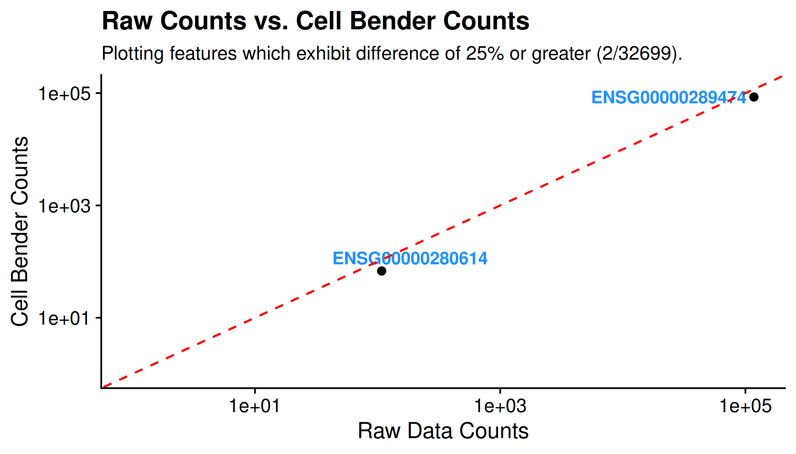
missing_obj <- CreateSeuratObject(
counts = cb_missing$Exp3_CMHEF_TGF,
assay = "RNA",
project = "Exp3_CMHEF_TGF"
)
missing_obj$Sample <- "Exp3_CMHEF_TGF"
missing_obj[["percent.mt"]] <- PercentageFeatureSet(missing_obj, pattern = "^MT-")
missing_obj[["percent.rp"]] <- PercentageFeatureSet(missing_obj, pattern = "^RP[SL]")
preQC <- merge(preQC, y = missing_obj)
preQC@assays$RAW <- NULLCheck quality control parameters
p1 <- VlnPlot(preQC, features = "nCount_RNA", group.by = "Sample", pt.size = 0) + theme(axis.title.x = element_blank()) + NoLegend()
p2 <- VlnPlot(preQC, features = "nFeature_RNA", group.by = "Sample", pt.size = 0) + theme(axis.title.x = element_blank()) + NoLegend()
p3 <- VlnPlot(preQC, features = "percent.mt", group.by = "Sample", pt.size = 0) + theme(axis.title.x = element_blank()) + NoLegend()
p4 <- VlnPlot(preQC, features = "percent.rp", group.by = "Sample", pt.size = 0) + theme(axis.title.x = element_blank()) + NoLegend()
QC_pre_VlnPlots <- p1 + p2 + p3 + p4 + plot_layout(ncol = 2)
QC_pre_VlnPlots
p1 <- VlnPlot(preQC, features = "nCount_RNA", group.by = "Sample", pt.size = 0, y.max = 10000) + theme(axis.title.x = element_blank()) + NoLegend()
p2 <- VlnPlot(preQC, features = "nFeature_RNA", group.by = "Sample", pt.size = 0, y.max = 6000) + theme(axis.title.x = element_blank()) + NoLegend()
p3 <- VlnPlot(preQC, features = "percent.mt", group.by = "Sample", pt.size = 0, y.max = 5) + theme(axis.title.x = element_blank()) + NoLegend()
p4 <- VlnPlot(preQC, features = "percent.rp", group.by = "Sample", pt.size = 0, y.max = 20) + theme(axis.title.x = element_blank()) + NoLegend()
QC_pre_VlnPlots_zoom <- p1 + p2 + p3 + p4 + plot_layout(ncol = 2)
QC_pre_VlnPlots_zoom
Doublets detection
preQC_sce <- as.SingleCellExperiment(preQC)
preQC_sce <- scDblFinder(preQC_sce, samples="Sample", clusters = TRUE) | | | 0% | |===== | 7% | |========== | 14% | |=============== | 21% | |==================== | 29% | |========================= | 36% | |============================== | 43% | |=================================== | 50% | |======================================== | 57% | |============================================= | 64% | |================================================== | 71% | |======================================================= | 79% | |============================================================ | 86% | |================================================================= | 93% | |======================================================================| 100%table(preQC_sce@colData$scDblFinder.class)
singlet doublet
58718 6129 preQC <- as.Seurat(preQC_sce, counts = "counts", data = "logcounts")
rm(preQC_sce)
preQC@meta.data[preQC@meta.data$scDblFinder.class %in% "singlet", "scDblFinder.n"] = paste0("Singlets (n=", table(preQC$scDblFinder.class)[1], ")")
preQC@meta.data[preQC@meta.data$scDblFinder.class %in% "doublet", "scDblFinder.n"] = paste0("Doublets (n=", table(preQC$scDblFinder.class)[2], ")")
preQC$scDblFinder.n <- factor(x = preQC$scDblFinder.n, levels = c(rownames(table(preQC$scDblFinder.n))[2], rownames(table(preQC$scDblFinder.n))[1])) p1 <- VlnPlot(preQC, features = c("nCount_RNA"), split.by = "scDblFinder.n", group.by = "Sample", pt.size = 0, y.max = 50000) + theme(axis.title.x = element_blank()) + NoLegend()
p2 <- VlnPlot(preQC, features = c("nFeature_RNA"), split.by = "scDblFinder.n", group.by = "Sample", pt.size = 0, y.max = 10000) + theme(axis.title.x = element_blank())
QC_pre_Doublets <- p1 + p2 + plot_layout(ncol = 2)
QC_pre_Doublets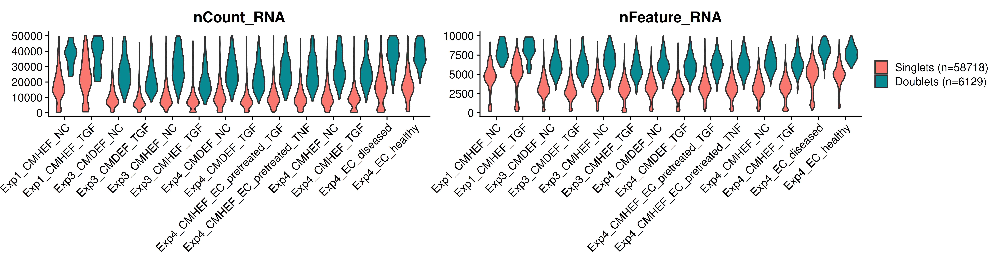
qs_save(preQC,
file = here::here(output_dir_data, "preQC.qs2"),
nthreads = 32
)metadata <- read_excel(here::here("data", "Libraries_MT_LMS_metadata.xlsx"))
add_metadata <- left_join(preQC[["Sample"]], metadata)
row.names(add_metadata) <- row.names(preQC[[]])
preQC <- AddMetaData(preQC, metadata = add_metadata)
rm(add_metadata)
rownames(metadata) <- metadata$Sample
metadata# A tibble: 16 × 5
Sample Experiment Type Treatment Disease
* <chr> <chr> <chr> <chr> <chr>
1 Exp1_CMHEF_NC MT1 Microtissues Untreated Healthy
2 Exp1_CMHEF_TGF MT1 Microtissues TGFb Healthy
3 RVS_200625_d0 LMS1 Myocardial slices <NA> <NA>
4 RVS_200625_d14 LMS1 Myocardial slices Untreated <NA>
5 Exp4_CMHEF_NC MT4 Microtissues Untreated Healthy
6 Exp4_CMHEF_TGF MT4 Microtissues TGFb Healthy
7 Exp4_CMDEF_NC MT4 Microtissues Untreated Diseas…
8 Exp4_CMDEF_TGF MT4 Microtissues TGFb Diseas…
9 Exp4_CMHEF_EC_pretreated_TNF MT4 Microtissues TNF_pretre… Healthy
10 Exp4_CMHEF_EC_pretreated_TGF MT4 Microtissues TGFb_pretr… Healthy
11 Exp4_EC_healthy MT4 Endothelial cells Untreated Healthy
12 Exp4_EC_diseased MT4 Endothelial cells Untreated Diseas…
13 Exp3_CMHEF_NC MT3 Microtissues Untreated Healthy
14 Exp3_CMHEF_TGF MT3 Microtissues TGFb Healthy
15 Exp3_CMDEF_NC MT3 Microtissues Untreated Diseas…
16 Exp3_CMDEF_TGF MT3 Microtissues TGFb Diseas…table(preQC$Sample)
Exp1_CMHEF_NC Exp1_CMHEF_TGF
587 1086
Exp3_CMDEF_NC Exp3_CMDEF_TGF
7125 6077
Exp3_CMHEF_NC Exp3_CMHEF_TGF
5835 8049
Exp4_CMDEF_NC Exp4_CMDEF_TGF
5841 4495
Exp4_CMHEF_EC_pretreated_TGF Exp4_CMHEF_EC_pretreated_TNF
5381 4553
Exp4_CMHEF_NC Exp4_CMHEF_TGF
3620 4224
Exp4_EC_diseased Exp4_EC_healthy
4538 3436 table(preQC$Sample, preQC$scDblFinder.class)
singlet doublet
Exp1_CMHEF_NC 557 30
Exp1_CMHEF_TGF 1039 47
Exp3_CMDEF_NC 6352 773
Exp3_CMDEF_TGF 5442 635
Exp3_CMHEF_NC 5266 569
Exp3_CMHEF_TGF 7077 972
Exp4_CMDEF_NC 5292 549
Exp4_CMDEF_TGF 4073 422
Exp4_CMHEF_EC_pretreated_TGF 4910 471
Exp4_CMHEF_EC_pretreated_TNF 4161 392
Exp4_CMHEF_NC 3341 279
Exp4_CMHEF_TGF 3852 372
Exp4_EC_diseased 4159 379
Exp4_EC_healthy 3197 239Remove doublets
preQC_no_doublets <- subset(x = preQC, subset = scDblFinder.class == "singlet")
table(preQC_no_doublets@meta.data$scDblFinder.class)
singlet doublet
58718 0 rm(preQC)Check quality control parameters after removing doublets
p1 <- VlnPlot(preQC_no_doublets, features = "nCount_RNA", group.by = "Sample", pt.size = 0) + theme(axis.title.x = element_blank()) + NoLegend()
p2 <- VlnPlot(preQC_no_doublets, features = "nFeature_RNA", group.by = "Sample", pt.size = 0) + theme(axis.title.x = element_blank()) + NoLegend()
p3 <- VlnPlot(preQC_no_doublets, features = "percent.mt", group.by = "Sample", pt.size = 0) + theme(axis.title.x = element_blank()) + NoLegend()
p4 <- VlnPlot(preQC_no_doublets, features = "percent.rp", group.by = "Sample", pt.size = 0) + theme(axis.title.x = element_blank()) + NoLegend()
QC_pre_no_doublets_VlnPlots <- p1 + p2 + p3 + p4 + plot_layout(ncol = 2)
QC_pre_no_doublets_VlnPlots
p1 <- VlnPlot(preQC_no_doublets, features = "nCount_RNA", group.by = "Sample", pt.size = 0, y.max = 10000) + theme(axis.title.x = element_blank()) + NoLegend()
p2 <- VlnPlot(preQC_no_doublets, features = "nFeature_RNA", group.by = "Sample", pt.size = 0, y.max = 6000) + theme(axis.title.x = element_blank()) + NoLegend()
p3 <- VlnPlot(preQC_no_doublets, features = "percent.mt", group.by = "Sample", pt.size = 0, y.max = 5) + theme(axis.title.x = element_blank()) + NoLegend()
p4 <- VlnPlot(preQC_no_doublets, features = "percent.rp", group.by = "Sample", pt.size = 0, y.max = 20) + theme(axis.title.x = element_blank()) + NoLegend()
QC_pre_no_doublets_VlnPlots_zoom <- p1 + p2 + p3 + p4 + plot_layout(ncol = 2)
QC_pre_no_doublets_VlnPlots_zoom
Filter based on number of counts, features and percentage of mitochondrial genes
postQC <- subset(preQC_no_doublets, subset =
nFeature_RNA > 500 &
percent.mt < 2 &
nCount_RNA > 1000)
table(postQC$Sample)
Exp1_CMHEF_NC Exp1_CMHEF_TGF
531 981
Exp3_CMDEF_NC Exp3_CMDEF_TGF
6090 5127
Exp3_CMHEF_NC Exp3_CMHEF_TGF
5098 6450
Exp4_CMDEF_NC Exp4_CMDEF_TGF
4969 3811
Exp4_CMHEF_EC_pretreated_TGF Exp4_CMHEF_EC_pretreated_TNF
4543 3911
Exp4_CMHEF_NC Exp4_CMHEF_TGF
3187 3514
Exp4_EC_diseased Exp4_EC_healthy
3989 3175 Check quality control parameters
p1 <- VlnPlot(postQC, features = "nCount_RNA", group.by = "Sample", pt.size = 0) + theme(axis.title.x = element_blank()) + NoLegend()
p2 <- VlnPlot(postQC, features = "nFeature_RNA", group.by = "Sample", pt.size = 0) + theme(axis.title.x = element_blank()) + NoLegend()
p3 <- VlnPlot(postQC, features = "percent.mt", group.by = "Sample", pt.size = 0) + theme(axis.title.x = element_blank()) + NoLegend()
p4 <- VlnPlot(postQC, features = "percent.rp", group.by = "Sample", pt.size = 0) + theme(axis.title.x = element_blank()) + NoLegend()
QC_post_VlnPlots <- p1 + p2 + p3 + p4 + plot_layout(ncol = 2)
QC_post_VlnPlots
p1 <- VlnPlot(postQC, features = "nCount_RNA", group.by = "Sample", pt.size = 0, y.max = 10000) + theme(axis.title.x = element_blank()) + NoLegend()
p2 <- VlnPlot(postQC, features = "nFeature_RNA", group.by = "Sample", pt.size = 0, y.max = 6000) + theme(axis.title.x = element_blank()) + NoLegend()
p3 <- VlnPlot(postQC, features = "percent.mt", group.by = "Sample", pt.size = 0, y.max = 5) + theme(axis.title.x = element_blank()) + NoLegend()
p4 <- VlnPlot(postQC, features = "percent.rp", group.by = "Sample", pt.size = 0, y.max = 20) + theme(axis.title.x = element_blank()) + NoLegend()
QC_post_VlnPlots_zoom <- p1 + p2 + p3 + p4 + plot_layout(ncol = 2)
QC_post_VlnPlots_zoom
Normalization and scaling using SCTransform.
DefaultAssay(postQC) <- "RNA"
postQC.list <- SplitObject(postQC, split.by = "Sample")
for (i in 1:length(postQC.list)) {
postQC.list[[i]] <- SCTransform(postQC.list[[i]],
vst.flavor = "v2",
vars.to.regress = c("percent.mt"),
return.only.var.genes = TRUE,
method = "glmGamPoi")
}PCA without integration
features <- SelectIntegrationFeatures(object.list = postQC.list, nfeatures = 3000)
not_integrated <- merge(x = postQC.list[[1]], y = postQC.list[2:length(postQC.list)], merge.data=TRUE)
VariableFeatures(not_integrated) <- features
not_integrated <- RunPCA(not_integrated)rm(preQC, preQC_no_doublets, postQC, postQC.list)qs_save(not_integrated,
file = here::here(output_dir_data, "not_integrated.qs2"),
nthreads = 32
)not_integrated <- qs_read(here::here(output_dir_data, "not_integrated.qs2"), nthreads = 32)ElbowPlot(not_integrated, ndims = 50)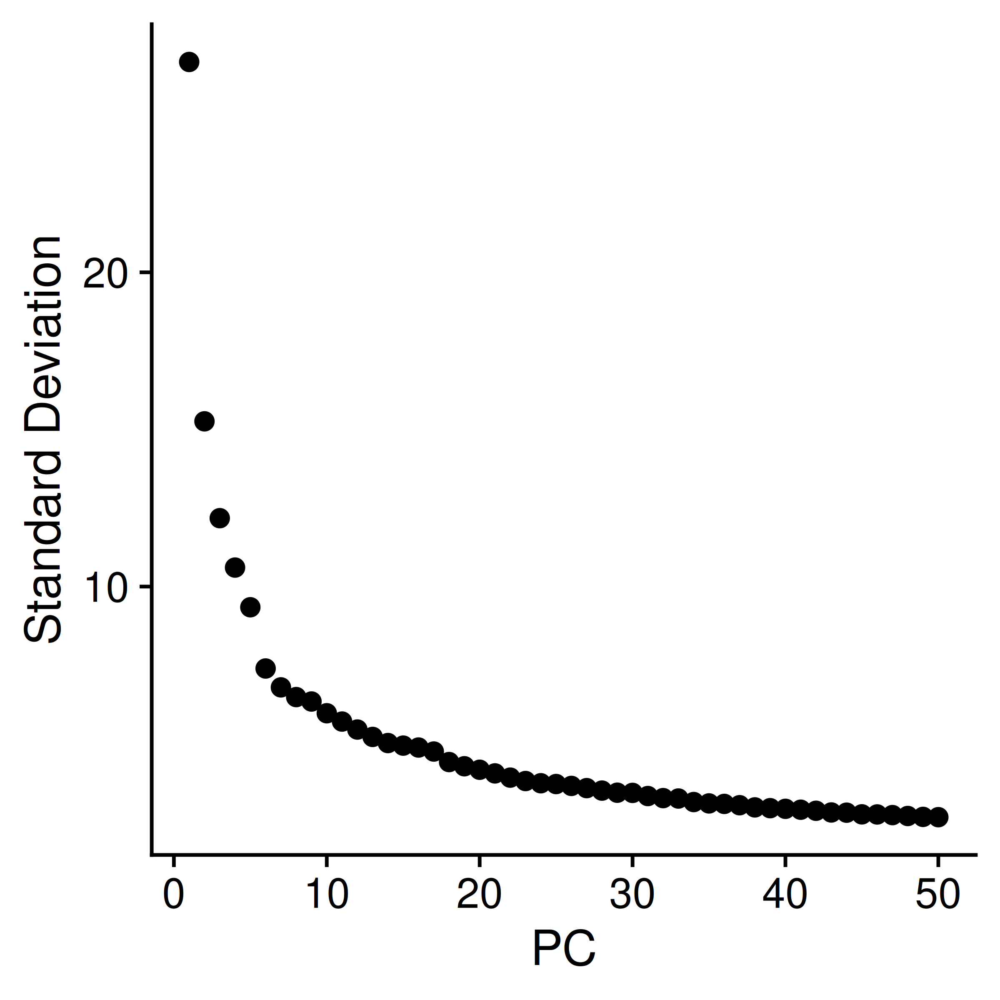
Clustering without integration
options(future.globals.maxSize = Inf)
not_integrated <- RunUMAP(not_integrated, dims = 1:50)
not_integrated <- FindNeighbors(not_integrated, dims = 1:50)
not_integrated <- FindClusters(not_integrated, resolution = seq(0.1, 0.8, by=0.1))clustree::clustree(not_integrated@meta.data[,grep("SCT_snn_res", colnames(not_integrated@meta.data))],
prefix = "SCT_snn_res.")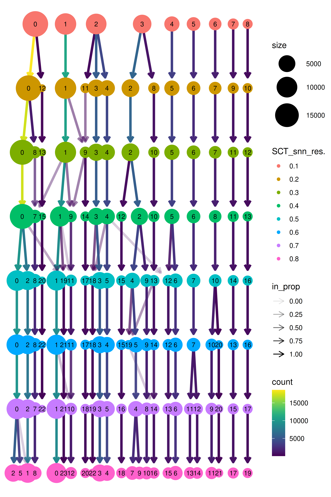
DimPlot(not_integrated, reduction = "umap", shuffle = T,
group.by = c("SCT_snn_res.0.2", "SCT_snn_res.0.3", "SCT_snn_res.0.4", "Sample", "Experiment", "Type", "Treatment", "Disease"), ncol = 4)
qs_save(not_integrated,
file = here::here(output_dir_data, "not_integrated.qs2"),
nthreads = 32
)Integrate the samples
integrated <- RunHarmony(not_integrated,
assay.use="SCT",
group.by.vars = c("Sample"),
dims.use = 1:50,
plot_convergence=TRUE,
.options = harmony_options(
max.iter.cluster = 100,
)
)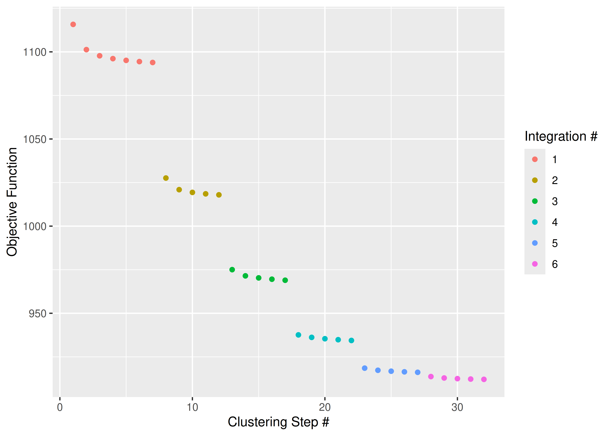
qs_save(integrated,
file = here::here(output_dir_data, "integrated.qs2"),
nthreads = 32
)integrated <- qs_read(here::here(output_dir_data, "integrated.qs2"), nthreads = 32)Clustering after integration
integrated <- RunUMAP(integrated, dims = 1:50, reduction = "harmony")
integrated <- FindNeighbors(integrated, dims = 1:50, reduction = "harmony")
integrated <- FindClusters(integrated, resolution = seq(0.1, 0.8, by=0.1))clustree::clustree(integrated@meta.data[,grep("SCT_snn_res", colnames(integrated@meta.data))],
prefix = "SCT_snn_res.")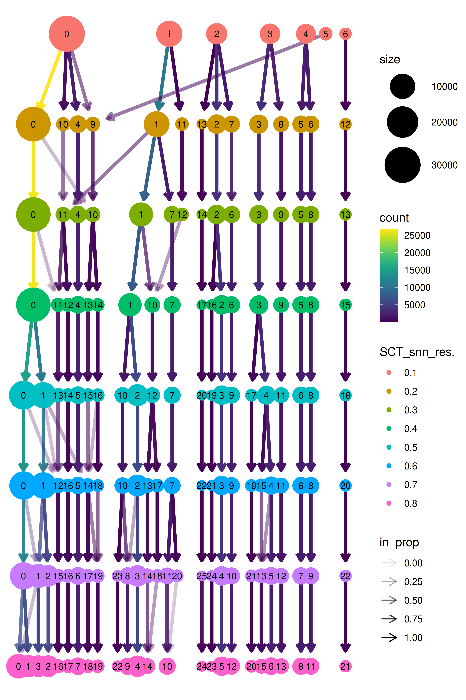
DimPlot(integrated, reduction = "umap", shuffle = T,
group.by = c("SCT_snn_res.0.2", "SCT_snn_res.0.3", "SCT_snn_res.0.4", "Sample", "Experiment", "Type", "Treatment", "Disease"), ncol = 4)
Only Exp4_NC_H
integrated_exp4nch <- subset(not_integrated, Sample %in% c("Exp4_CMHEF_NC"))
DefaultAssay(integrated_exp4nch) <- "SCT"
integrated_exp4nch <- RunPCA(integrated_exp4nch)ElbowPlot(integrated_exp4nch, ndims = 50)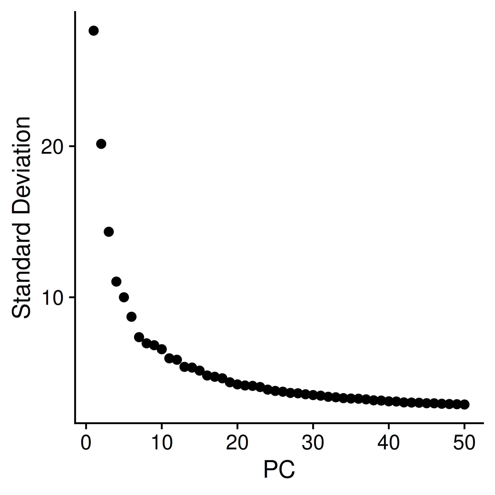
integrated_exp4nch <- RunUMAP(integrated_exp4nch, dims = 1:50, reduction = "pca")
integrated_exp4nch <- FindNeighbors(integrated_exp4nch, dims = 1:50, reduction = "pca")
integrated_exp4nch <- FindClusters(integrated_exp4nch, resolution = seq(0.1, 0.8, by=0.1))Modularity Optimizer version 1.3.0 by Ludo Waltman and Nees Jan van Eck
Number of nodes: 3187
Number of edges: 128101
Running Louvain algorithm...
Maximum modularity in 10 random starts: 0.9504
Number of communities: 6
Elapsed time: 0 seconds
Modularity Optimizer version 1.3.0 by Ludo Waltman and Nees Jan van Eck
Number of nodes: 3187
Number of edges: 128101
Running Louvain algorithm...
Maximum modularity in 10 random starts: 0.9129
Number of communities: 6
Elapsed time: 0 seconds
Modularity Optimizer version 1.3.0 by Ludo Waltman and Nees Jan van Eck
Number of nodes: 3187
Number of edges: 128101
Running Louvain algorithm...
Maximum modularity in 10 random starts: 0.8773
Number of communities: 7
Elapsed time: 0 seconds
Modularity Optimizer version 1.3.0 by Ludo Waltman and Nees Jan van Eck
Number of nodes: 3187
Number of edges: 128101
Running Louvain algorithm...
Maximum modularity in 10 random starts: 0.8538
Number of communities: 7
Elapsed time: 0 seconds
Modularity Optimizer version 1.3.0 by Ludo Waltman and Nees Jan van Eck
Number of nodes: 3187
Number of edges: 128101
Running Louvain algorithm...
Maximum modularity in 10 random starts: 0.8346
Number of communities: 8
Elapsed time: 0 seconds
Modularity Optimizer version 1.3.0 by Ludo Waltman and Nees Jan van Eck
Number of nodes: 3187
Number of edges: 128101
Running Louvain algorithm...
Maximum modularity in 10 random starts: 0.8170
Number of communities: 8
Elapsed time: 0 seconds
Modularity Optimizer version 1.3.0 by Ludo Waltman and Nees Jan van Eck
Number of nodes: 3187
Number of edges: 128101
Running Louvain algorithm...
Maximum modularity in 10 random starts: 0.8045
Number of communities: 9
Elapsed time: 0 seconds
Modularity Optimizer version 1.3.0 by Ludo Waltman and Nees Jan van Eck
Number of nodes: 3187
Number of edges: 128101
Running Louvain algorithm...
Maximum modularity in 10 random starts: 0.7895
Number of communities: 9
Elapsed time: 0 secondsclustree::clustree(integrated_exp4nch@meta.data[,grep("SCT_snn_res", colnames(integrated_exp4nch@meta.data))],
prefix = "SCT_snn_res.")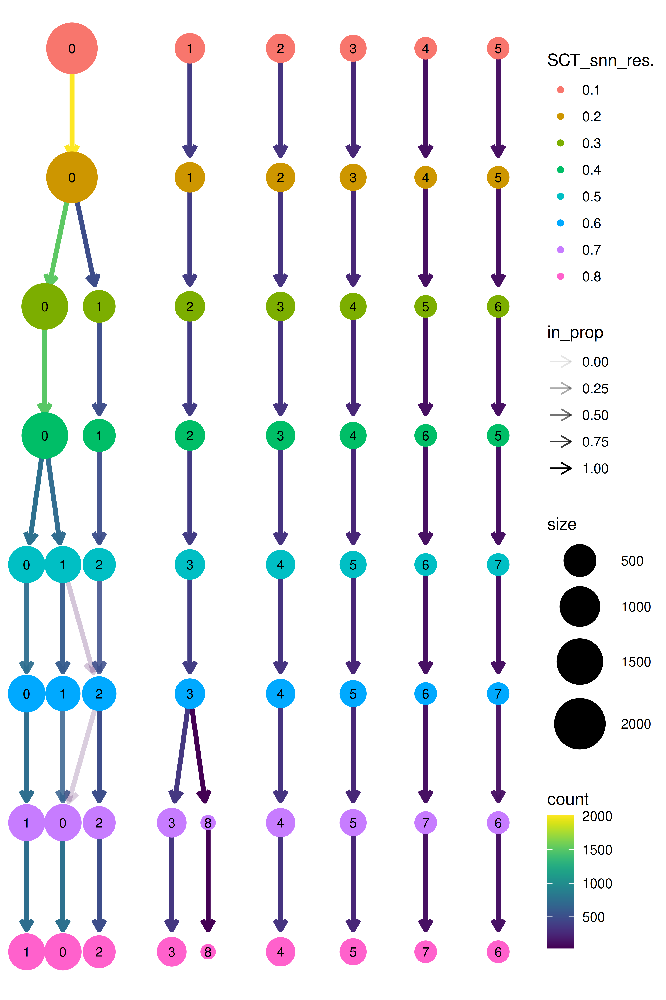
DimPlot(integrated_exp4nch, reduction = "umap", shuffle = T,
group.by = c("SCT_snn_res.0.2", "SCT_snn_res.0.3", "SCT_snn_res.0.4", "Sample", "Experiment", "Type", "Treatment", "Disease"), ncol = 4)
DefaultAssay(integrated_exp4nch) <- "RNA"
integrated_exp4nch <- NormalizeData(integrated_exp4nch)
Idents(integrated_exp4nch) <- "SCT_snn_res.0.2"
Markers_integrated_exp4nch <- FindAllMarkers(integrated_exp4nch, only.pos = TRUE, min.pct = 0.5, logfc.threshold = 0.5)
write.csv(Markers_integrated_exp4nch, here::here(output_dir_data, "Markers_all_integrated_exp4nch.csv"))
Markers_top10_integrated_exp4nch <- as.data.frame(Markers_integrated_exp4nch %>% group_by(cluster) %>% top_n(n = 10, wt = avg_log2FC))
write.csv(Markers_top10_integrated_exp4nch, here::here(output_dir_data, "Markers_all_top10_integrated_exp4nch.csv"))
Markers_top3_integrated_exp4nch <- as.data.frame(Markers_integrated_exp4nch %>% group_by(cluster) %>% top_n(n = 3, wt = avg_log2FC))
write.csv(Markers_top3_integrated_exp4nch, here::here(output_dir_data, "Markers_all_top3integrated_exp4nch.csv"))VlnPlot(integrated_exp4nch, features = c("nCount_RNA", "nFeature_RNA", "percent.mt", "percent.rp", "scDblFinder.score"), ncol = 2, pt.size = 0) + theme(axis.title.x = element_blank())
DefaultAssay(integrated_exp4nch) <- "RNA"
s.genes <- cc.genes$s.genes
g2m.genes <- cc.genes$g2m.genes
integrated_exp4nch <- CellCycleScoring(integrated_exp4nch, s.features = s.genes, g2m.features = g2m.genes)
DimPlot(integrated_exp4nch, reduction = "umap", shuffle = T,
group.by = "Phase")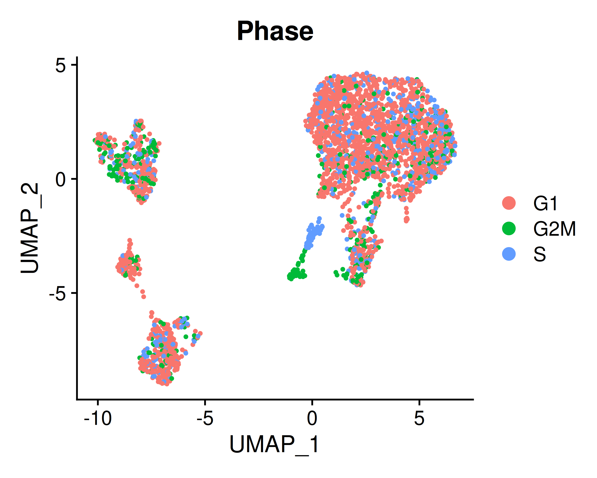
integrated_exp4nch@meta.data[integrated_exp4nch@meta.data$SCT_snn_res.0.2 %in% c("0"), "cell_type"] = "Cm1"
integrated_exp4nch@meta.data[integrated_exp4nch@meta.data$SCT_snn_res.0.2 %in% c("1"), "cell_type"] = "Ec1"
integrated_exp4nch@meta.data[integrated_exp4nch@meta.data$SCT_snn_res.0.2 %in% c("2"), "cell_type"] = "Fb"
integrated_exp4nch@meta.data[integrated_exp4nch@meta.data$SCT_snn_res.0.2 %in% c("3"), "cell_type"] = "Cm2"
integrated_exp4nch@meta.data[integrated_exp4nch@meta.data$SCT_snn_res.0.2 %in% c("4"), "cell_type"] = "Ec2"
integrated_exp4nch@meta.data[integrated_exp4nch@meta.data$SCT_snn_res.0.2 %in% c("5"), "cell_type"] = "Prol"
integrated_exp4nch$cell_type <- factor(integrated_exp4nch$cell_type, levels = c("Cm1",
"Ec1",
"Fb",
"Cm2",
"Ec2",
"Prol"
))
Idents(integrated_exp4nch) <- integrated_exp4nch$cell_typeheatmap_cols <- colorRampPalette(RColorBrewer::brewer.pal(9,"RdBu"))(256)
heatmap_cols <- rev(heatmap_cols[1:256])
integrated_exp4nch <- ScaleData(integrated_exp4nch)
Heatmap <- DoHeatmap(integrated_exp4nch, label = TRUE, draw.line = F, features = Markers_top10_integrated_exp4nch$gene, assay = "RNA") +
scale_fill_gradientn(colours = heatmap_cols) +
theme(text = element_text(size = 12),
axis.text.y = element_text(size = 8)) +
theme(plot.margin = unit(c(0.2, 0, 0, 0), "inches")) +
guides(fill = guide_colorbar(barwidth = 1, barheight = 4)) + guides(color = "none")
Heatmap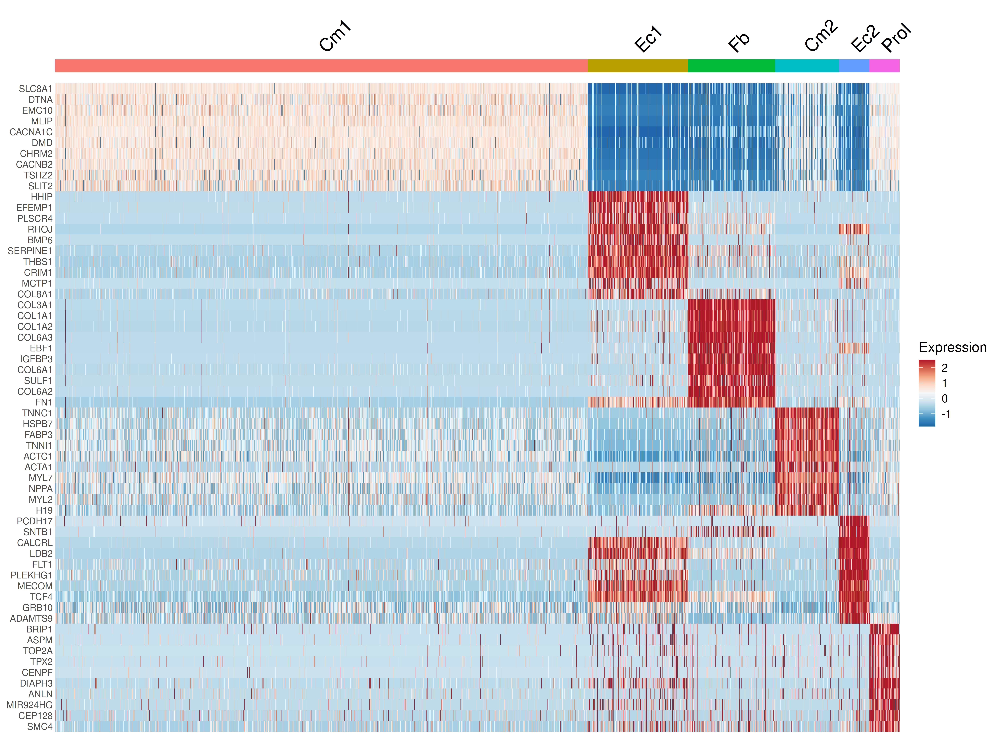
p <- DimPlot(integrated_exp4nch, group.by = "cell_type", reduction = "umap", label = F) +
NoLegend() +
theme(axis.text=element_text(size=14, face = "bold"), axis.title = element_text(size = 18, face = "bold")) +
theme(plot.title = element_blank())
LabelClusters(p, id = "cell_type", fontface = "bold", size = 5.5, repel = T)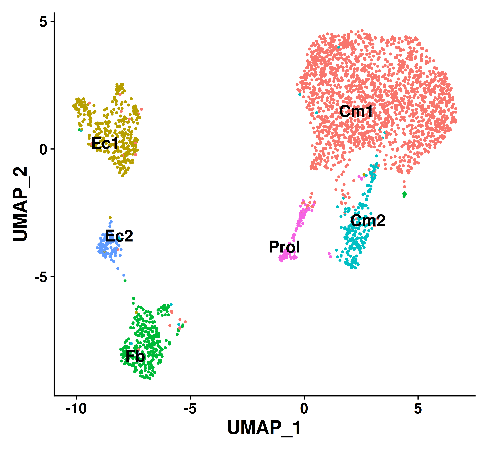
DotPlot(integrated_exp4nch, assay = "SCT", features = rev(Markers_top3_integrated_exp4nch$gene), dot.scale = 5, cluster.idents = FALSE) +
RotatedAxis() +
coord_flip() +
theme(axis.title = element_blank(), axis.text.x = element_text(size = 14), axis.text.y = element_text(size = 13), legend.text = element_text(size = 9), legend.title = element_text(size = 11), plot.margin = unit(c(0, 0, 0, 0.1),
"inches"))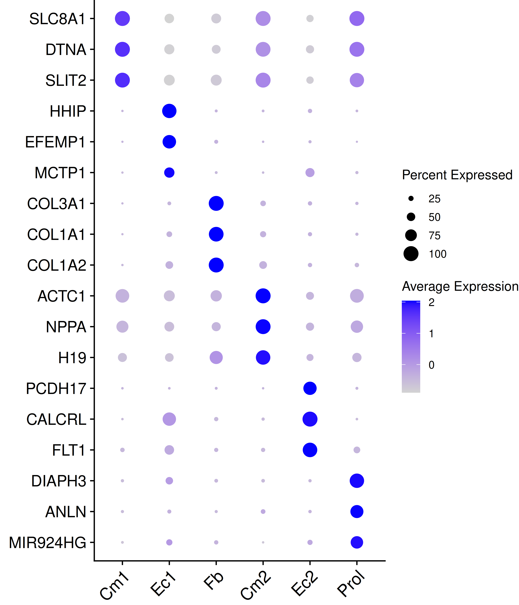
FeaturePlot_scCustom(integrated_exp4nch, features = c("VWF", "PECAM1", "RYR2", "TTN", "COL1A1", "COL1A2", "DCN", "PDGFRA", "KDR", "CDH5", "ESAM", "CD34", "nCount_RNA", "nFeature_RNA", "percent.mt", "percent.rp"), num_columns = 4)
color_palette_all <- c("#F8766D", "#00C1AB", "#24B700", "#E18A00", "#00ACFC", "#D575FE", "#BE9C00", "#00BE70",
"#8CAB00", "#00BBDA", "#FF65AC", "#8B93FF", "#EA8331")
color_palette <- c("#F8766D", "#24B700", "#00ACFC", "#E18A00", "#D575FE", "#8B93FF", "#BE9C00", "#00BE70", "#FF65AC")
props <- getTransformedProps(integrated_exp4nch$cell_type, integrated_exp4nch$Sample, transform="logit")
par(mar = c(23, 5, 1, 15), xpd = TRUE)
barplot(props$Proportions, legend = FALSE, ylab = "Proportions", col = color_palette,
cex.names = 1.6, las = 2, font.lab = 2, font.axis = 2, cex.axis = 1, cex.lab = 1.6)
legend("topright", inset = c(-0.5, 0.1), legend = rownames(props$Proportions), fill = color_palette, bty = "n", cex = 1.6)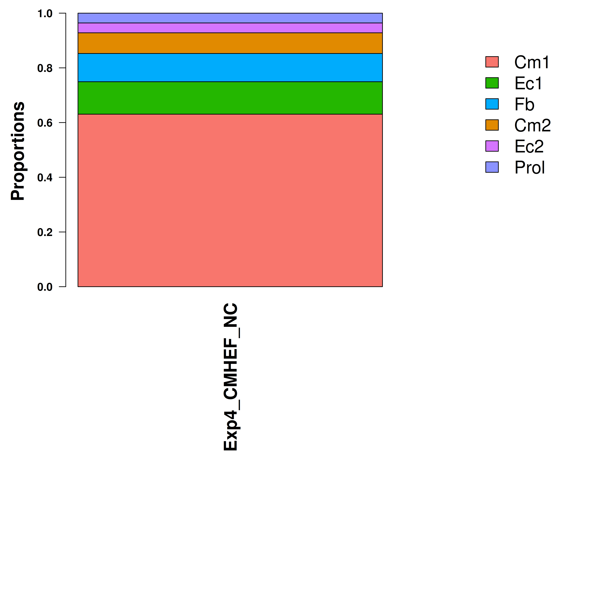
Only Exp4_NC
integrated_exp4nc <- subset(not_integrated, Sample %in% c("Exp4_CMHEF_NC", "Exp4_CMDEF_NC"))
DefaultAssay(integrated_exp4nc) <- "SCT"
integrated_exp4nc <- SplitObject(integrated_exp4nc, split.by = "Sample")features <- SelectIntegrationFeatures(object.list = integrated_exp4nc, nfeatures = 3000)
integrated_exp4nc <- merge(x = integrated_exp4nc[[1]], y = integrated_exp4nc[2:length(integrated_exp4nc)], merge.data=TRUE)
VariableFeatures(integrated_exp4nc) <- features
integrated_exp4nc <- RunPCA(integrated_exp4nc)ElbowPlot(integrated_exp4nc, ndims = 50)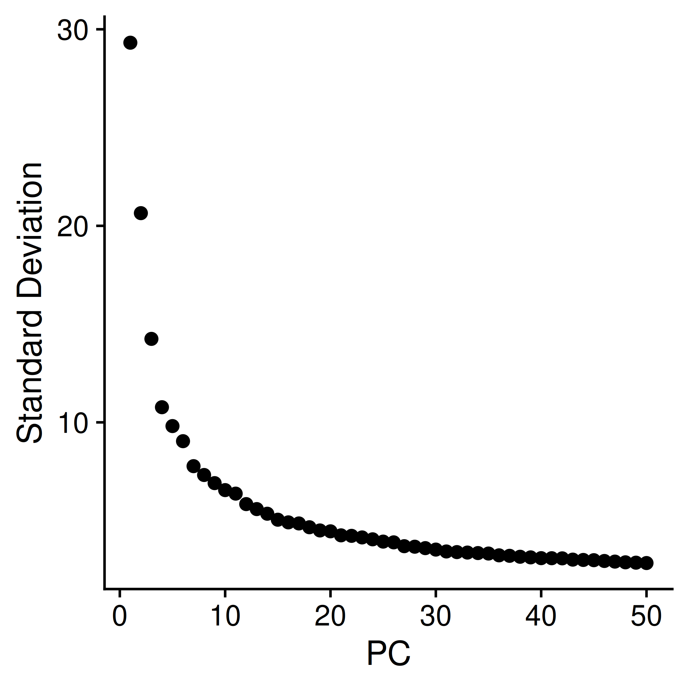
integrated_exp4nc <- RunHarmony(integrated_exp4nc,
assay.use="SCT",
group.by.vars = c("Sample"),
dims.use = 1:50,
plot_convergence=TRUE,
.options = harmony_options(
max.iter.cluster = 100,
)
)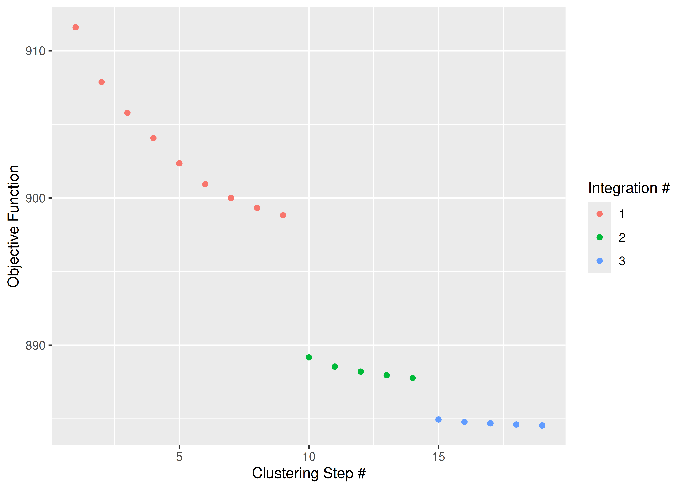
integrated_exp4nc <- RunUMAP(integrated_exp4nc, dims = 1:50, reduction = "harmony")
integrated_exp4nc <- FindNeighbors(integrated_exp4nc, dims = 1:50, reduction = "harmony")
integrated_exp4nc <- FindClusters(integrated_exp4nc, resolution = seq(0.1, 0.8, by=0.1))Modularity Optimizer version 1.3.0 by Ludo Waltman and Nees Jan van Eck
Number of nodes: 8156
Number of edges: 301710
Running Louvain algorithm...
Maximum modularity in 10 random starts: 0.9510
Number of communities: 6
Elapsed time: 1 seconds
Modularity Optimizer version 1.3.0 by Ludo Waltman and Nees Jan van Eck
Number of nodes: 8156
Number of edges: 301710
Running Louvain algorithm...
Maximum modularity in 10 random starts: 0.9137
Number of communities: 6
Elapsed time: 1 seconds
Modularity Optimizer version 1.3.0 by Ludo Waltman and Nees Jan van Eck
Number of nodes: 8156
Number of edges: 301710
Running Louvain algorithm...
Maximum modularity in 10 random starts: 0.8853
Number of communities: 8
Elapsed time: 1 seconds
Modularity Optimizer version 1.3.0 by Ludo Waltman and Nees Jan van Eck
Number of nodes: 8156
Number of edges: 301710
Running Louvain algorithm...
Maximum modularity in 10 random starts: 0.8669
Number of communities: 11
Elapsed time: 1 seconds
Modularity Optimizer version 1.3.0 by Ludo Waltman and Nees Jan van Eck
Number of nodes: 8156
Number of edges: 301710
Running Louvain algorithm...
Maximum modularity in 10 random starts: 0.8534
Number of communities: 12
Elapsed time: 1 seconds
Modularity Optimizer version 1.3.0 by Ludo Waltman and Nees Jan van Eck
Number of nodes: 8156
Number of edges: 301710
Running Louvain algorithm...
Maximum modularity in 10 random starts: 0.8394
Number of communities: 11
Elapsed time: 1 seconds
Modularity Optimizer version 1.3.0 by Ludo Waltman and Nees Jan van Eck
Number of nodes: 8156
Number of edges: 301710
Running Louvain algorithm...
Maximum modularity in 10 random starts: 0.8275
Number of communities: 12
Elapsed time: 1 seconds
Modularity Optimizer version 1.3.0 by Ludo Waltman and Nees Jan van Eck
Number of nodes: 8156
Number of edges: 301710
Running Louvain algorithm...
Maximum modularity in 10 random starts: 0.8146
Number of communities: 14
Elapsed time: 1 secondsclustree::clustree(integrated_exp4nc@meta.data[,grep("SCT_snn_res", colnames(integrated_exp4nc@meta.data))],
prefix = "SCT_snn_res.")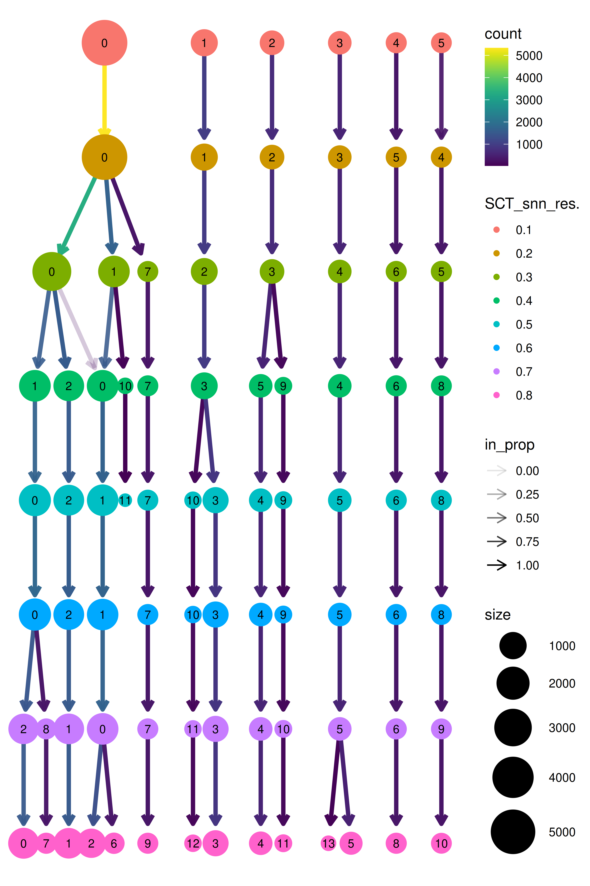
DimPlot(integrated_exp4nc, reduction = "umap", shuffle = T,
group.by = c("SCT_snn_res.0.2", "SCT_snn_res.0.3", "SCT_snn_res.0.4", "Sample", "Experiment", "Type", "Treatment", "Disease"), ncol = 4)
DefaultAssay(integrated_exp4nc) <- "RNA"
integrated_exp4nc <- NormalizeData(integrated_exp4nc)
Idents(integrated_exp4nc) <- "SCT_snn_res.0.2"
Markers_integrated_exp4nc <- FindAllMarkers(integrated_exp4nc, only.pos = TRUE, min.pct = 0.5, logfc.threshold = 0.5)
write.csv(Markers_integrated_exp4nc, here::here(output_dir_data, "Markers_all_integrated_exp4nc.csv"))
Markers_top10_integrated_exp4nc <- as.data.frame(Markers_integrated_exp4nc %>% group_by(cluster) %>% top_n(n = 10, wt = avg_log2FC))
write.csv(Markers_top10_integrated_exp4nc, here::here(output_dir_data, "Markers_all_top10_integrated_exp4nc.csv"))
Markers_top3_integrated_exp4nc <- as.data.frame(Markers_integrated_exp4nc %>% group_by(cluster) %>% top_n(n = 3, wt = avg_log2FC))
write.csv(Markers_top3_integrated_exp4nc, here::here(output_dir_data, "Markers_all_top3integrated_exp4nc.csv"))VlnPlot(integrated_exp4nc, features = c("nCount_RNA", "nFeature_RNA", "percent.mt", "percent.rp", "scDblFinder.score"), ncol = 2, pt.size = 0) + theme(axis.title.x = element_blank())
DefaultAssay(integrated_exp4nc) <- "RNA"
s.genes <- cc.genes$s.genes
g2m.genes <- cc.genes$g2m.genes
integrated_exp4nc <- CellCycleScoring(integrated_exp4nc, s.features = s.genes, g2m.features = g2m.genes)
DimPlot(integrated_exp4nc, reduction = "umap", shuffle = T,
group.by = "Phase")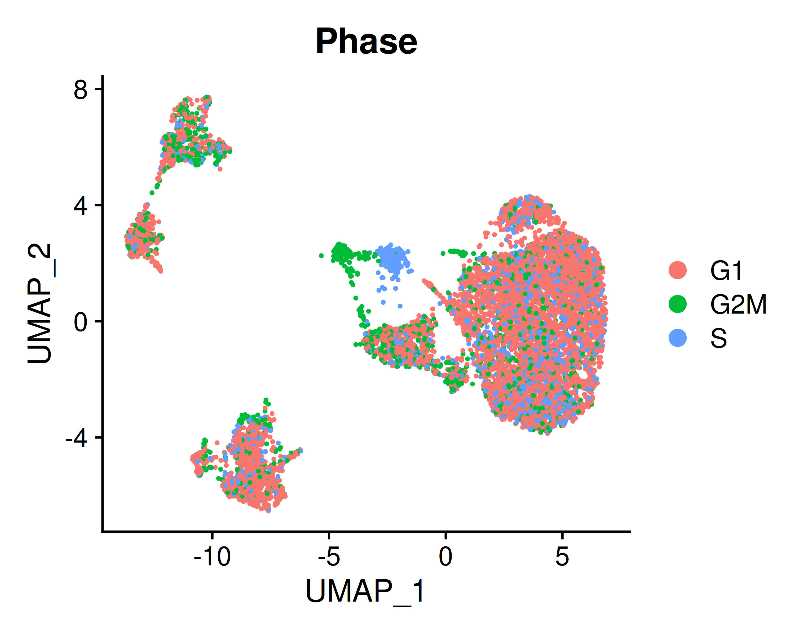
integrated_exp4nc@meta.data[integrated_exp4nc@meta.data$SCT_snn_res.0.2 %in% c("0"), "cell_type"] = "Cm1"
integrated_exp4nc@meta.data[integrated_exp4nc@meta.data$SCT_snn_res.0.2 %in% c("1"), "cell_type"] = "Fb1"
integrated_exp4nc@meta.data[integrated_exp4nc@meta.data$SCT_snn_res.0.2 %in% c("2"), "cell_type"] = "Cm2"
integrated_exp4nc@meta.data[integrated_exp4nc@meta.data$SCT_snn_res.0.2 %in% c("3"), "cell_type"] = "Ec"
integrated_exp4nc@meta.data[integrated_exp4nc@meta.data$SCT_snn_res.0.2 %in% c("4"), "cell_type"] = "Prol"
integrated_exp4nc@meta.data[integrated_exp4nc@meta.data$SCT_snn_res.0.2 %in% c("5"), "cell_type"] = "Ec2"
integrated_exp4nc$cell_type <- factor(integrated_exp4nc$cell_type, levels = c("Cm1",
"Fb1",
"Cm2",
"Ec",
"Prol",
"Ec2"
))
Idents(integrated_exp4nc) <- integrated_exp4nc$cell_typeheatmap_cols <- colorRampPalette(RColorBrewer::brewer.pal(9,"RdBu"))(256)
heatmap_cols <- rev(heatmap_cols[1:256])
integrated_exp4nc <- ScaleData(integrated_exp4nc)
Heatmap <- DoHeatmap(subset(integrated_exp4nc, cells = sample(colnames(integrated_exp4nc), 7164)), label = TRUE, draw.line = F, features = Markers_top10_integrated_exp4nc$gene, assay = "RNA") +
scale_fill_gradientn(colours = heatmap_cols) +
theme(text = element_text(size = 12),
axis.text.y = element_text(size = 8)) +
theme(plot.margin = unit(c(0.2, 0, 0, 0), "inches")) +
guides(fill = guide_colorbar(barwidth = 1, barheight = 4)) + guides(color = "none")
Heatmap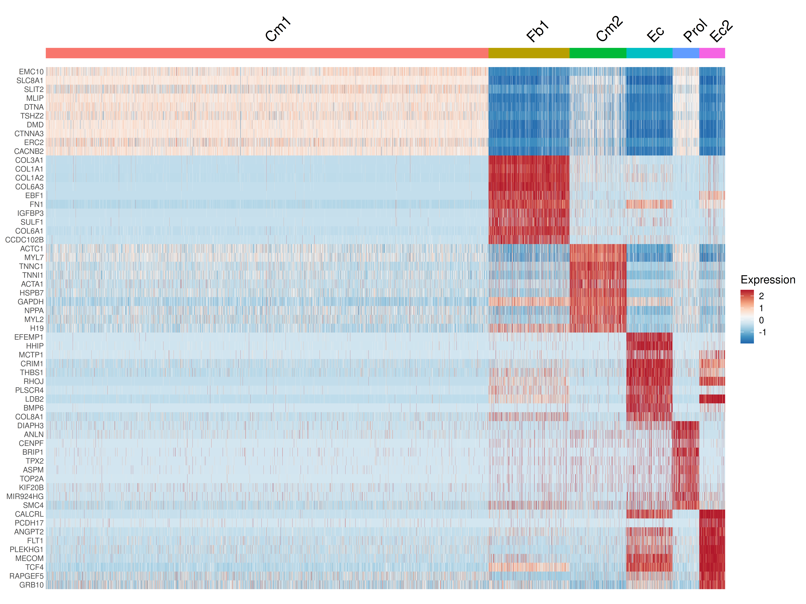
p <- DimPlot(integrated_exp4nc, group.by = "cell_type", reduction = "umap", label = F) +
NoLegend() +
theme(axis.text=element_text(size=14, face = "bold"), axis.title = element_text(size = 18, face = "bold")) +
theme(plot.title = element_blank())
LabelClusters(p, id = "cell_type", fontface = "bold", size = 5.5, repel = T)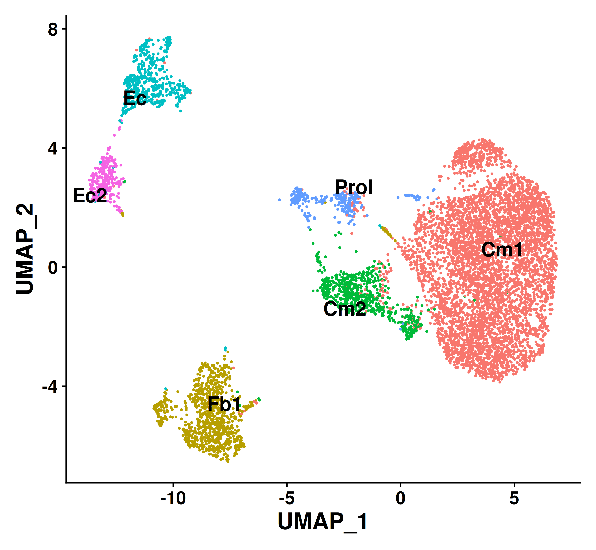
DotPlot(integrated_exp4nc, assay = "SCT", features = rev(Markers_top3_integrated_exp4nc$gene), dot.scale = 5, cluster.idents = FALSE) +
RotatedAxis() +
coord_flip() +
theme(axis.title = element_blank(), axis.text.x = element_text(size = 14), axis.text.y = element_text(size = 13), legend.text = element_text(size = 9), legend.title = element_text(size = 11), plot.margin = unit(c(0, 0, 0, 0.1),
"inches"))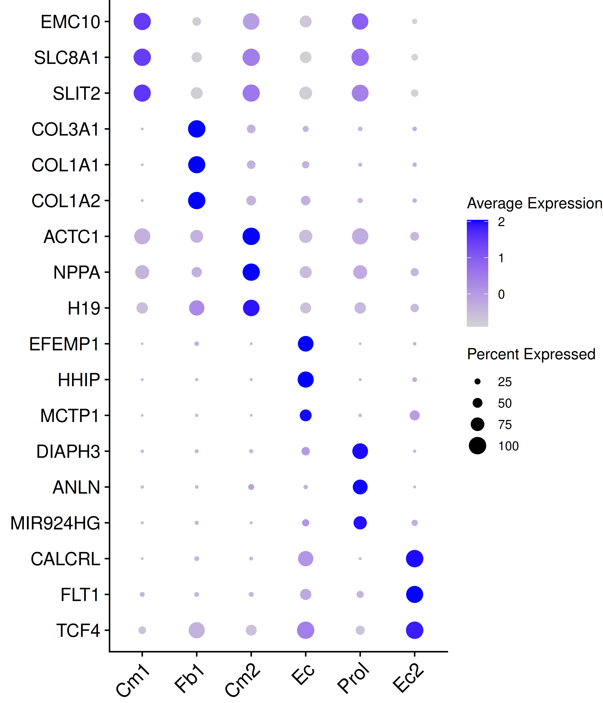
FeaturePlot_scCustom(integrated_exp4nc, features = c("VWF", "PECAM1", "RYR2", "TTN", "COL1A1", "COL1A2", "DCN", "PDGFRA", "KDR", "CDH5", "ESAM", "CD34", "nCount_RNA", "nFeature_RNA", "percent.mt", "percent.rp"), num_columns = 4)
color_palette_all <- c("#F8766D", "#00C1AB", "#24B700", "#E18A00", "#00ACFC", "#D575FE", "#BE9C00", "#00BE70",
"#8CAB00", "#00BBDA", "#FF65AC", "#8B93FF", "#EA8331")
color_palette <- c("#F8766D", "#24B700", "#00ACFC", "#E18A00", "#D575FE", "#8B93FF", "#BE9C00", "#00BE70", "#FF65AC")
props <- getTransformedProps(integrated_exp4nc$cell_type, integrated_exp4nc$Sample, transform="logit")
par(mar = c(23, 5, 1, 15), xpd = TRUE)
barplot(props$Proportions, legend = FALSE, ylab = "Proportions", col = color_palette,
cex.names = 1.6, las = 2, font.lab = 2, font.axis = 2, cex.axis = 1, cex.lab = 1.6)
legend("topright", inset = c(-0.5, 0.1), legend = rownames(props$Proportions), fill = color_palette, bty = "n", cex = 1.6)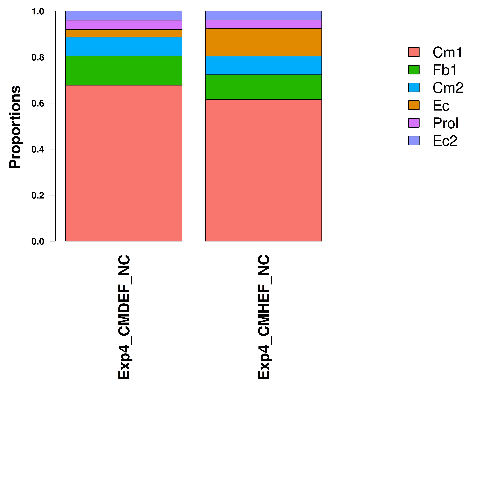
Only microtissues
integrated_mt <- subset(not_integrated, Type == "Microtissues")
DefaultAssay(integrated_mt) <- "SCT"
integrated_mt <- SplitObject(integrated_mt, split.by = "Sample")features <- SelectIntegrationFeatures(object.list = integrated_mt, nfeatures = 3000)
integrated_mt <- merge(x = integrated_mt[[1]], y = integrated_mt[2:length(integrated_mt)], merge.data=TRUE)
VariableFeatures(integrated_mt) <- features
integrated_mt <- RunPCA(integrated_mt)ElbowPlot(integrated_mt, ndims = 50)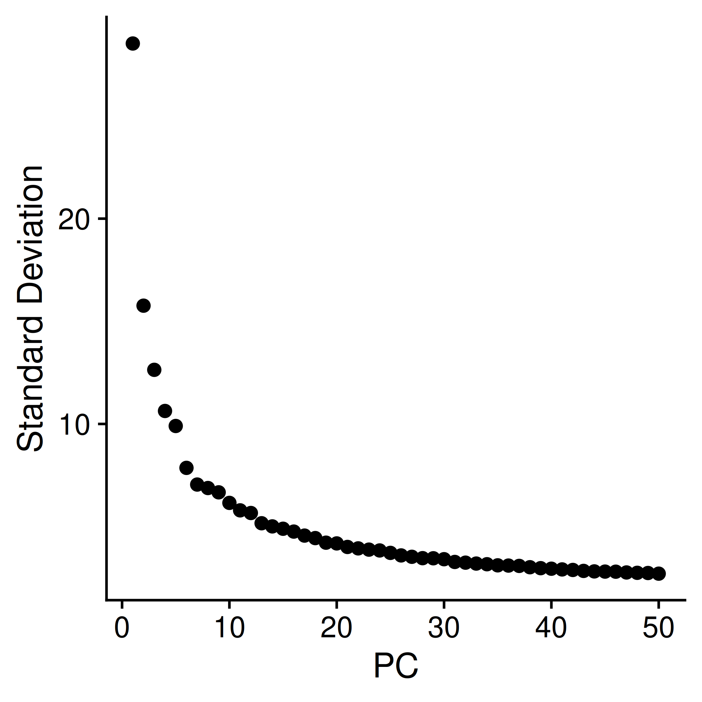
integrated_mt <- RunUMAP(integrated_mt, dims = 1:50)
integrated_mt <- FindNeighbors(integrated_mt, dims = 1:50)
integrated_mt <- FindClusters(integrated_mt, resolution = seq(0.1, 0.8, by=0.1))Modularity Optimizer version 1.3.0 by Ludo Waltman and Nees Jan van Eck
Number of nodes: 48212
Number of edges: 1576891
Running Louvain algorithm...
Maximum modularity in 10 random starts: 0.9623
Number of communities: 7
Elapsed time: 23 seconds
Modularity Optimizer version 1.3.0 by Ludo Waltman and Nees Jan van Eck
Number of nodes: 48212
Number of edges: 1576891
Running Louvain algorithm...
Maximum modularity in 10 random starts: 0.9437
Number of communities: 11
Elapsed time: 23 seconds
Modularity Optimizer version 1.3.0 by Ludo Waltman and Nees Jan van Eck
Number of nodes: 48212
Number of edges: 1576891
Running Louvain algorithm...
Maximum modularity in 10 random starts: 0.9273
Number of communities: 12
Elapsed time: 23 seconds
Modularity Optimizer version 1.3.0 by Ludo Waltman and Nees Jan van Eck
Number of nodes: 48212
Number of edges: 1576891
Running Louvain algorithm...
Maximum modularity in 10 random starts: 0.9136
Number of communities: 14
Elapsed time: 23 seconds
Modularity Optimizer version 1.3.0 by Ludo Waltman and Nees Jan van Eck
Number of nodes: 48212
Number of edges: 1576891
Running Louvain algorithm...
Maximum modularity in 10 random starts: 0.9024
Number of communities: 17
Elapsed time: 21 seconds
Modularity Optimizer version 1.3.0 by Ludo Waltman and Nees Jan van Eck
Number of nodes: 48212
Number of edges: 1576891
Running Louvain algorithm...
Maximum modularity in 10 random starts: 0.8923
Number of communities: 19
Elapsed time: 20 seconds
Modularity Optimizer version 1.3.0 by Ludo Waltman and Nees Jan van Eck
Number of nodes: 48212
Number of edges: 1576891
Running Louvain algorithm...
Maximum modularity in 10 random starts: 0.8826
Number of communities: 19
Elapsed time: 21 seconds
Modularity Optimizer version 1.3.0 by Ludo Waltman and Nees Jan van Eck
Number of nodes: 48212
Number of edges: 1576891
Running Louvain algorithm...
Maximum modularity in 10 random starts: 0.8741
Number of communities: 21
Elapsed time: 22 secondsclustree::clustree(integrated_mt@meta.data[,grep("SCT_snn_res", colnames(integrated_mt@meta.data))],
prefix = "SCT_snn_res.")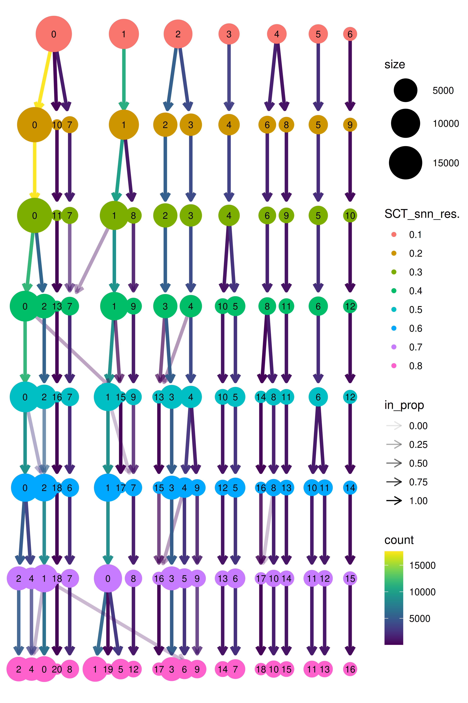
DimPlot(integrated_mt, reduction = "umap", shuffle = T,
group.by = c("SCT_snn_res.0.2", "SCT_snn_res.0.3", "SCT_snn_res.0.4", "Sample", "Experiment", "Type", "Treatment", "Disease"), ncol = 4)
integrated_mt <- RunHarmony(integrated_mt,
assay.use="SCT",
group.by.vars = c("Sample"),
dims.use = 1:50,
plot_convergence=TRUE,
.options = harmony_options(
max.iter.cluster = 100,
)
)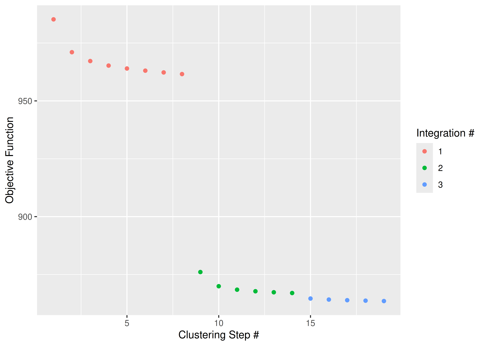
integrated_mt <- RunUMAP(integrated_mt, dims = 1:50, reduction = "harmony")
integrated_mt <- FindNeighbors(integrated_mt, dims = 1:50, reduction = "harmony")
integrated_mt <- FindClusters(integrated_mt, resolution = seq(0.1, 0.8, by=0.1))Modularity Optimizer version 1.3.0 by Ludo Waltman and Nees Jan van Eck
Number of nodes: 48212
Number of edges: 1528622
Running Louvain algorithm...
Maximum modularity in 10 random starts: 0.9575
Number of communities: 5
Elapsed time: 28 seconds
Modularity Optimizer version 1.3.0 by Ludo Waltman and Nees Jan van Eck
Number of nodes: 48212
Number of edges: 1528622
Running Louvain algorithm...
Maximum modularity in 10 random starts: 0.9293
Number of communities: 8
Elapsed time: 23 seconds
Modularity Optimizer version 1.3.0 by Ludo Waltman and Nees Jan van Eck
Number of nodes: 48212
Number of edges: 1528622
Running Louvain algorithm...
Maximum modularity in 10 random starts: 0.9046
Number of communities: 9
Elapsed time: 25 seconds
Modularity Optimizer version 1.3.0 by Ludo Waltman and Nees Jan van Eck
Number of nodes: 48212
Number of edges: 1528622
Running Louvain algorithm...
Maximum modularity in 10 random starts: 0.8909
Number of communities: 14
Elapsed time: 29 seconds
Modularity Optimizer version 1.3.0 by Ludo Waltman and Nees Jan van Eck
Number of nodes: 48212
Number of edges: 1528622
Running Louvain algorithm...
Maximum modularity in 10 random starts: 0.8782
Number of communities: 14
Elapsed time: 26 seconds
Modularity Optimizer version 1.3.0 by Ludo Waltman and Nees Jan van Eck
Number of nodes: 48212
Number of edges: 1528622
Running Louvain algorithm...
Maximum modularity in 10 random starts: 0.8700
Number of communities: 16
Elapsed time: 27 seconds
Modularity Optimizer version 1.3.0 by Ludo Waltman and Nees Jan van Eck
Number of nodes: 48212
Number of edges: 1528622
Running Louvain algorithm...
Maximum modularity in 10 random starts: 0.8616
Number of communities: 19
Elapsed time: 25 seconds
Modularity Optimizer version 1.3.0 by Ludo Waltman and Nees Jan van Eck
Number of nodes: 48212
Number of edges: 1528622
Running Louvain algorithm...
Maximum modularity in 10 random starts: 0.8532
Number of communities: 19
Elapsed time: 25 secondsclustree::clustree(integrated_mt@meta.data[,grep("SCT_snn_res", colnames(integrated_mt@meta.data))],
prefix = "SCT_snn_res.")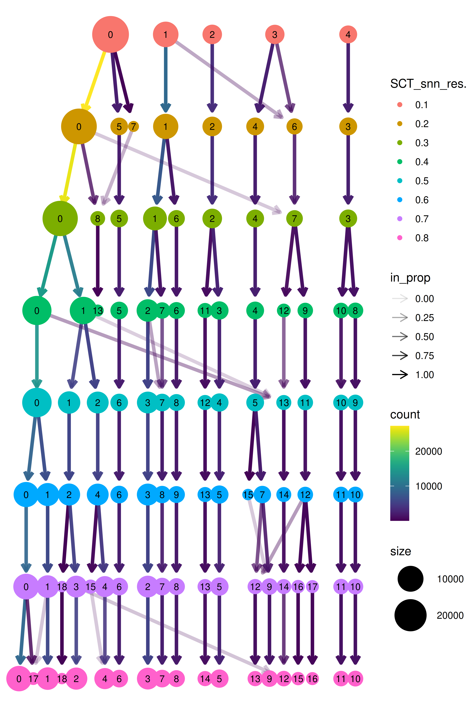
DimPlot(integrated_mt, reduction = "umap", shuffle = T,
group.by = c("SCT_snn_res.0.2", "SCT_snn_res.0.3", "SCT_snn_res.0.4", "Sample", "Experiment", "Type", "Treatment", "Disease"), ncol = 4)
Find the markers that characterize each cell population
DefaultAssay(integrated_mt) <- "RNA"
integrated_mt <- NormalizeData(integrated_mt)
Idents(integrated_mt) <- "SCT_snn_res.0.3"
Markers <- FindAllMarkers(integrated_mt, only.pos = TRUE, min.pct = 0.5, logfc.threshold = 0.5)
write.csv(Markers, here::here(output_dir_data, "Markers_all_mt.csv"))
Markers_top10 <- as.data.frame(Markers %>% group_by(cluster) %>% top_n(n = 10, wt = avg_log2FC))
write.csv(Markers_top10, here::here(output_dir_data, "Markers_top10_mt.csv"))
Markers_top3 <- as.data.frame(Markers %>% group_by(cluster) %>% top_n(n = 3, wt = avg_log2FC))
write.csv(Markers_top3, here::here(output_dir_data, "Markers_top3_mt.csv"))VlnPlot(integrated_mt, features = c("nCount_RNA", "nFeature_RNA", "percent.mt", "percent.rp", "scDblFinder.score"), ncol = 2, pt.size = 0) + theme(axis.title.x = element_blank())
DefaultAssay(integrated_mt) <- "RNA"
s.genes <- cc.genes$s.genes
g2m.genes <- cc.genes$g2m.genes
integrated_mt <- CellCycleScoring(integrated_mt, s.features = s.genes, g2m.features = g2m.genes)
DimPlot(integrated_mt, reduction = "umap", shuffle = T,
group.by = "Phase")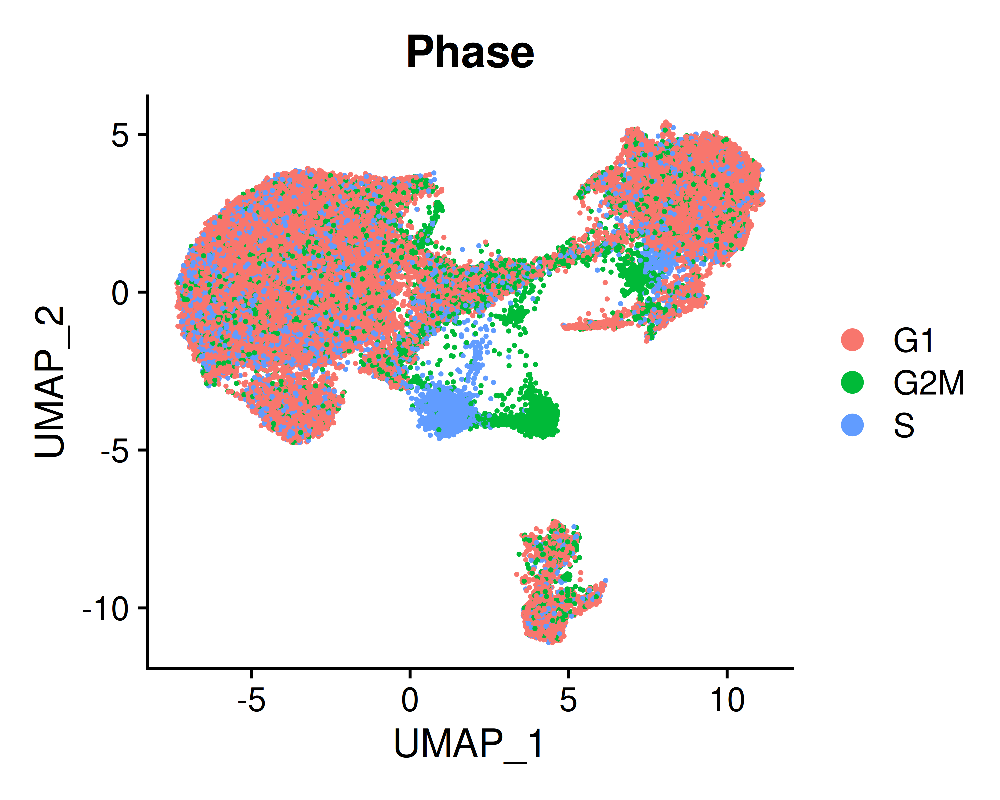
integrated_mt@meta.data[integrated_mt@meta.data$SCT_snn_res.0.3 %in% c("0"), "cell_type"] = "Cm1"
integrated_mt@meta.data[integrated_mt@meta.data$SCT_snn_res.0.3 %in% c("1"), "cell_type"] = "Fb1"
integrated_mt@meta.data[integrated_mt@meta.data$SCT_snn_res.0.3 %in% c("2"), "cell_type"] = "Cm2"
integrated_mt@meta.data[integrated_mt@meta.data$SCT_snn_res.0.3 %in% c("3"), "cell_type"] = "Prol"
integrated_mt@meta.data[integrated_mt@meta.data$SCT_snn_res.0.3 %in% c("4"), "cell_type"] = "Ec"
integrated_mt@meta.data[integrated_mt@meta.data$SCT_snn_res.0.3 %in% c("5"), "cell_type"] = "Cm3"
integrated_mt@meta.data[integrated_mt@meta.data$SCT_snn_res.0.3 %in% c("6"), "cell_type"] = "Fb2"
integrated_mt@meta.data[integrated_mt@meta.data$SCT_snn_res.0.3 %in% c("7"), "cell_type"] = "Fb3"
integrated_mt@meta.data[integrated_mt@meta.data$SCT_snn_res.0.3 %in% c("8"), "cell_type"] = "Cm4"
integrated_mt$cell_type <- factor(integrated_mt$cell_type, levels = c("Cm1",
"Fb1",
"Cm2",
"Prol",
"Ec",
"Cm3",
"Fb2",
"Fb3",
"Cm4"))
Idents(integrated_mt) <- integrated_mt$cell_typeheatmap_cols <- colorRampPalette(RColorBrewer::brewer.pal(9,"RdBu"))(256)
heatmap_cols <- rev(heatmap_cols[1:256])
integrated_mt <- ScaleData(integrated_mt)
Heatmap <- DoHeatmap(subset(integrated_mt, cells = sample(colnames(integrated_mt), 20000)), label = TRUE, draw.line = F, features = Markers_top10$gene, assay = "RNA") +
scale_fill_gradientn(colours = heatmap_cols) +
theme(text = element_text(size = 12),
axis.text.y = element_text(size = 8)) +
theme(plot.margin = unit(c(0.2, 0, 0, 0), "inches")) +
guides(fill = guide_colorbar(barwidth = 1, barheight = 4)) + guides(color = "none")
Heatmap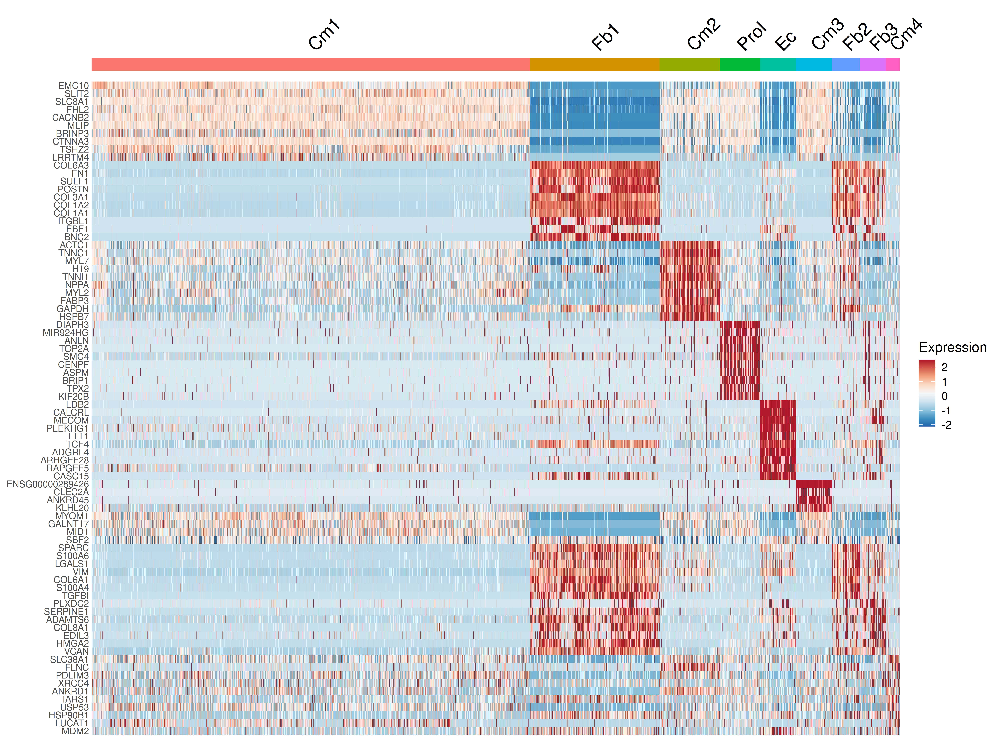
p <- DimPlot(integrated_mt, group.by = "cell_type", reduction = "umap", label = F) +
NoLegend() +
theme(axis.text=element_text(size=14, face = "bold"), axis.title = element_text(size = 18, face = "bold")) +
theme(plot.title = element_blank())
LabelClusters(p, id = "cell_type", fontface = "bold", size = 5.5, repel = T)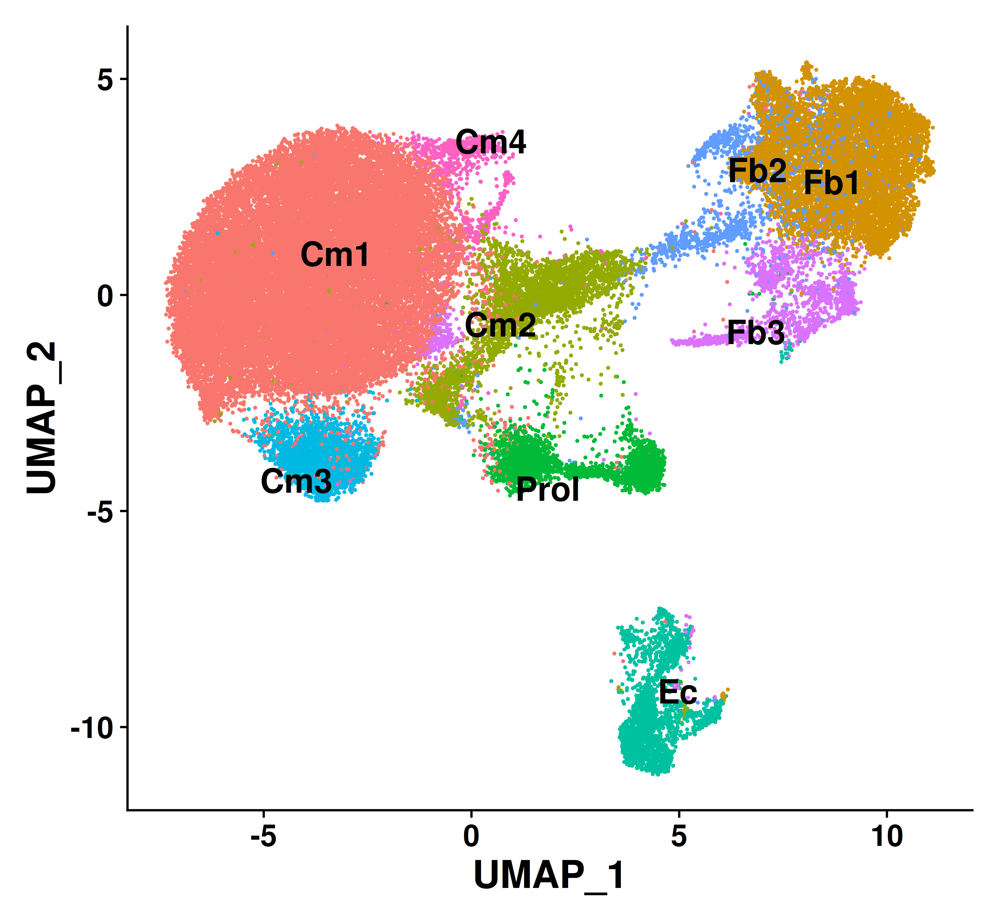
DotPlot(integrated_mt, assay = "SCT", features = rev(Markers_top3$gene), dot.scale = 5, cluster.idents = FALSE) +
RotatedAxis() +
coord_flip() +
theme(axis.title = element_blank(), axis.text.x = element_text(size = 14), axis.text.y = element_text(size = 13), legend.text = element_text(size = 9), legend.title = element_text(size = 11), plot.margin = unit(c(0, 0, 0, 0.1),
"inches"))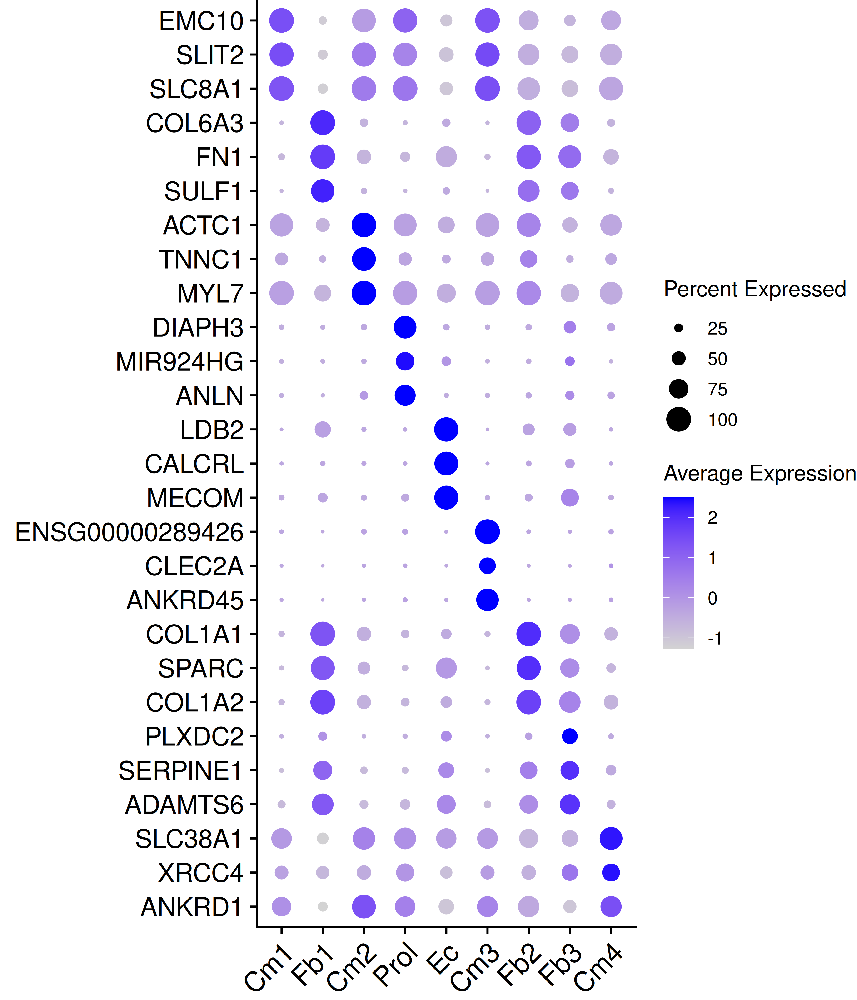
FeaturePlot_scCustom(integrated_mt, features = c("ACTA2", "POSTN", "COL1A1", "VIM"), num_columns = 4)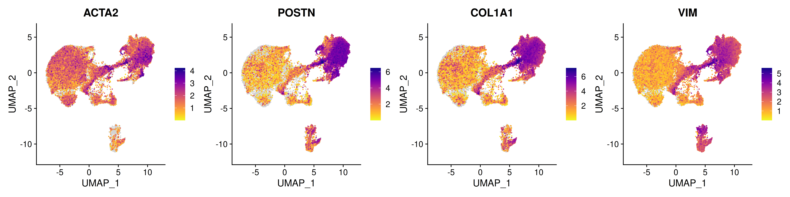
FeaturePlot_scCustom(integrated_mt, features = c("VWF", "PECAM1", "RYR2", "TTN", "COL1A1", "COL1A2", "DCN", "PDGFRA", "KDR", "CDH5", "ESAM", "CD34", "nCount_RNA", "nFeature_RNA", "percent.mt", "percent.rp"), num_columns = 4)
color_palette_all <- c("#F8766D", "#00C1AB", "#24B700", "#E18A00", "#00ACFC", "#D575FE", "#BE9C00", "#00BE70",
"#8CAB00", "#00BBDA", "#FF65AC", "#8B93FF", "#EA8331")
color_palette <- c("#F8766D", "#24B700", "#00ACFC", "#E18A00", "#D575FE", "#8B93FF", "#BE9C00", "#00BE70", "#FF65AC")
props <- getTransformedProps(integrated_mt$cell_type, integrated_mt$Sample, transform="logit")
par(mar = c(23, 5, 1, 10), xpd = TRUE)
barplot(props$Proportions, legend = FALSE, ylab = "Proportions", col = color_palette,
cex.names = 1.6, las = 2, font.lab = 2, font.axis = 2, cex.axis = 1, cex.lab = 1.6)
legend("topright", inset = c(-0.2, 0.1), legend = rownames(props$Proportions), fill = color_palette, bty = "n", cex = 1.6)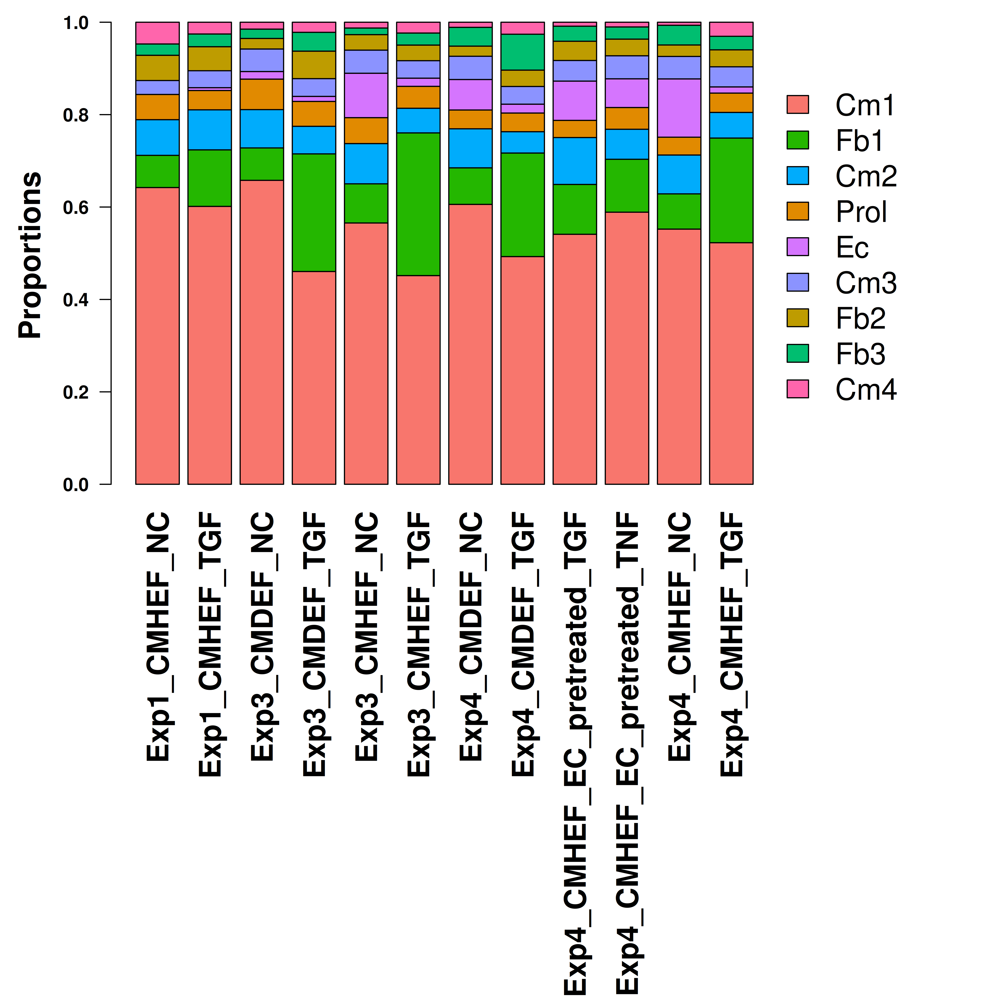
color_palette_all <- c("#F8766D", "#00C1AB", "#24B700", "#E18A00", "#00ACFC", "#D575FE", "#BE9C00", "#00BE70",
"#8CAB00", "#00BBDA", "#FF65AC", "#8B93FF", "#EA8331")
color_palette <- c("#F8766D", "#24B700", "#00ACFC", "#E18A00", "#D575FE", "#8B93FF", "#BE9C00", "#00BE70", "#FF65AC")
props <- getTransformedProps(integrated_mt$cell_type, integrated_mt$Treatment, transform="logit")
par(mar = c(23, 5, 1, 10), xpd = TRUE)
barplot(props$Proportions, legend = FALSE, ylab = "Proportions", col = color_palette,
cex.names = 1.6, las = 2, font.lab = 2, font.axis = 2, cex.axis = 1, cex.lab = 1.6)
legend("topright", inset = c(-0.2, 0.1), legend = rownames(props$Proportions), fill = color_palette, bty = "n", cex = 1.6)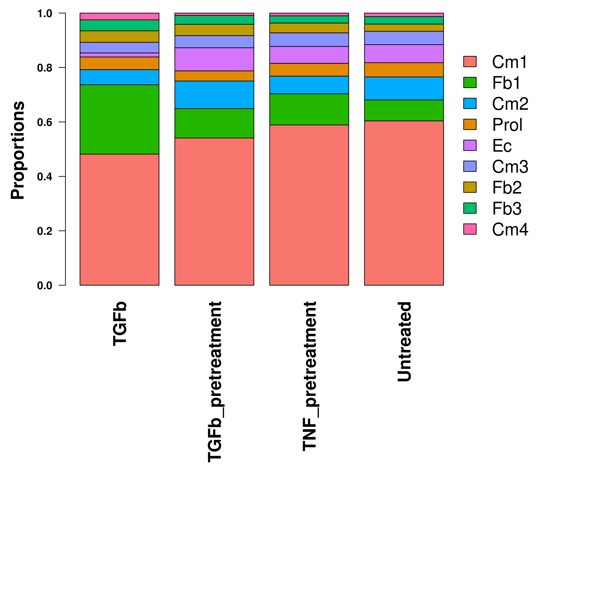
Only 2D EC
integrated_ec <- subset(not_integrated, Type == "Endothelial cells")
DefaultAssay(integrated_ec) <- "SCT"
integrated_ec <- SplitObject(integrated_ec, split.by = "Sample")features <- SelectIntegrationFeatures(object.list = integrated_ec, nfeatures = 1000)
integrated_ec <- merge(x = integrated_ec[[1]], y = integrated_ec[2:length(integrated_ec)], merge.data=TRUE)
VariableFeatures(integrated_ec) <- features
integrated_ec <- RunPCA(integrated_ec)ElbowPlot(integrated_ec, ndims = 50)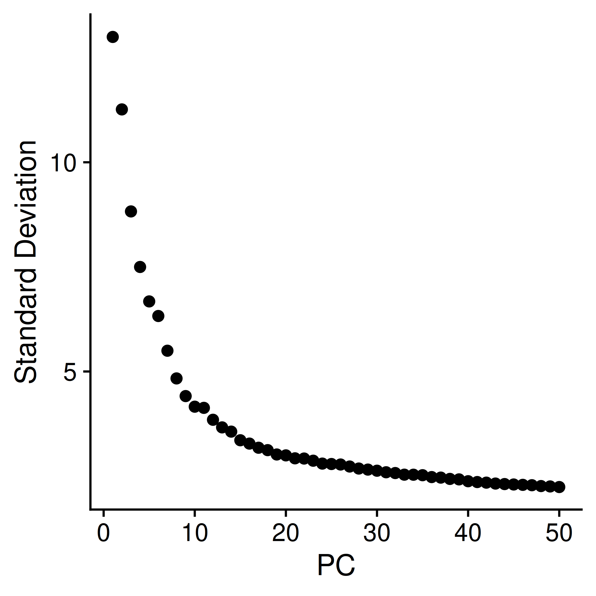
integrated_ec <- RunHarmony(integrated_ec,
assay.use="SCT",
group.by.vars = c("Sample"),
dims.use = 1:30,
plot_convergence=TRUE,
.options = harmony_options(
max.iter.cluster = 100,
)
)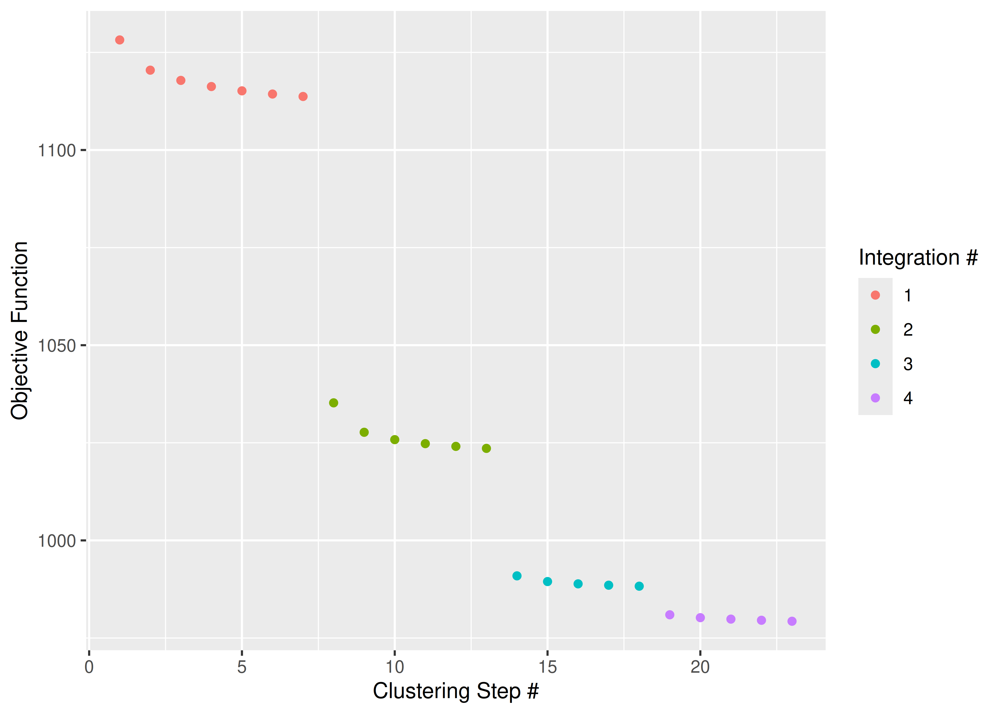
integrated_ec <- RunUMAP(integrated_ec, dims = 1:30, reduction = "harmony")
integrated_ec <- FindNeighbors(integrated_ec, dims = 1:30, reduction = "harmony")
integrated_ec <- FindClusters(integrated_ec, resolution = seq(0.1, 0.8, by=0.1))Modularity Optimizer version 1.3.0 by Ludo Waltman and Nees Jan van Eck
Number of nodes: 7164
Number of edges: 295485
Running Louvain algorithm...
Maximum modularity in 10 random starts: 0.9401
Number of communities: 4
Elapsed time: 1 seconds
Modularity Optimizer version 1.3.0 by Ludo Waltman and Nees Jan van Eck
Number of nodes: 7164
Number of edges: 295485
Running Louvain algorithm...
Maximum modularity in 10 random starts: 0.9103
Number of communities: 6
Elapsed time: 1 seconds
Modularity Optimizer version 1.3.0 by Ludo Waltman and Nees Jan van Eck
Number of nodes: 7164
Number of edges: 295485
Running Louvain algorithm...
Maximum modularity in 10 random starts: 0.8893
Number of communities: 7
Elapsed time: 1 seconds
Modularity Optimizer version 1.3.0 by Ludo Waltman and Nees Jan van Eck
Number of nodes: 7164
Number of edges: 295485
Running Louvain algorithm...
Maximum modularity in 10 random starts: 0.8705
Number of communities: 8
Elapsed time: 1 seconds
Modularity Optimizer version 1.3.0 by Ludo Waltman and Nees Jan van Eck
Number of nodes: 7164
Number of edges: 295485
Running Louvain algorithm...
Maximum modularity in 10 random starts: 0.8544
Number of communities: 9
Elapsed time: 1 seconds
Modularity Optimizer version 1.3.0 by Ludo Waltman and Nees Jan van Eck
Number of nodes: 7164
Number of edges: 295485
Running Louvain algorithm...
Maximum modularity in 10 random starts: 0.8395
Number of communities: 10
Elapsed time: 1 seconds
Modularity Optimizer version 1.3.0 by Ludo Waltman and Nees Jan van Eck
Number of nodes: 7164
Number of edges: 295485
Running Louvain algorithm...
Maximum modularity in 10 random starts: 0.8279
Number of communities: 11
Elapsed time: 1 seconds
Modularity Optimizer version 1.3.0 by Ludo Waltman and Nees Jan van Eck
Number of nodes: 7164
Number of edges: 295485
Running Louvain algorithm...
Maximum modularity in 10 random starts: 0.8171
Number of communities: 11
Elapsed time: 1 secondsclustree::clustree(integrated_ec@meta.data[,grep("SCT_snn_res", colnames(integrated_ec@meta.data))],
prefix = "SCT_snn_res.")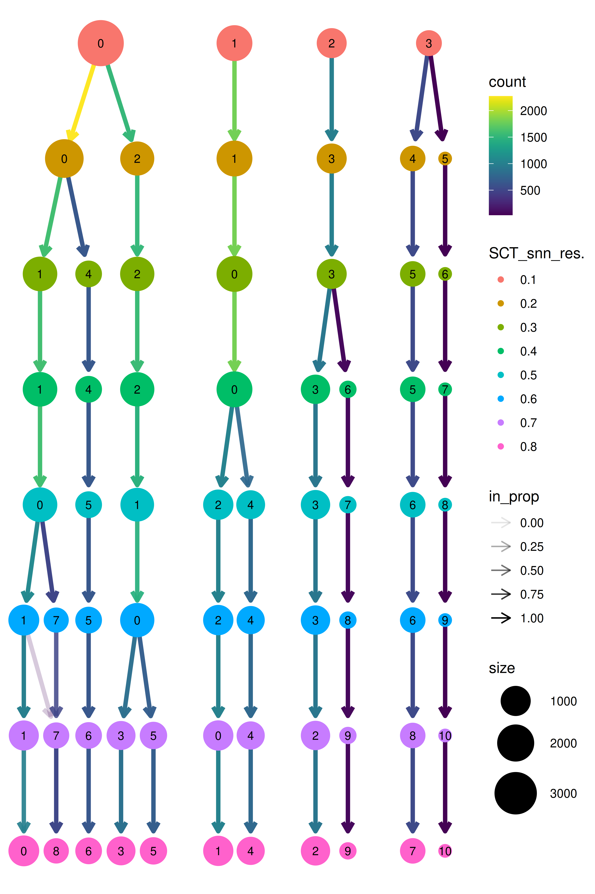
DimPlot(integrated_ec, reduction = "umap", shuffle = T,
group.by = c("SCT_snn_res.0.2", "SCT_snn_res.0.3", "SCT_snn_res.0.4", "Sample", "Experiment", "Type", "Treatment", "Disease"), ncol = 4)
DefaultAssay(integrated_ec) <- "RNA"
integrated_ec <- NormalizeData(integrated_ec)
Idents(integrated_ec) <- "SCT_snn_res.0.2"
Markers_integrated_ec <- FindAllMarkers(integrated_ec, only.pos = TRUE, min.pct = 0.5, logfc.threshold = 0.5)
write.csv(Markers_integrated_ec, here::here(output_dir_data, "Markers_all_integrated_ec.csv"))
Markers_top10_integrated_ec <- as.data.frame(Markers_integrated_ec %>% group_by(cluster) %>% top_n(n = 10, wt = avg_log2FC))
write.csv(Markers_top10_integrated_ec, here::here(output_dir_data, "Markers_all_top10_integrated_ec.csv"))
Markers_top3_integrated_ec <- as.data.frame(Markers_integrated_ec %>% group_by(cluster) %>% top_n(n = 3, wt = avg_log2FC))
write.csv(Markers_top3_integrated_ec, here::here(output_dir_data, "Markers_all_top3integrated_ec.csv"))VlnPlot(integrated_ec, features = c("nCount_RNA", "nFeature_RNA", "percent.mt", "percent.rp", "scDblFinder.score"), ncol = 2, pt.size = 0) + theme(axis.title.x = element_blank())
DefaultAssay(integrated_ec) <- "RNA"
s.genes <- cc.genes$s.genes
g2m.genes <- cc.genes$g2m.genes
integrated_ec <- CellCycleScoring(integrated_ec, s.features = s.genes, g2m.features = g2m.genes)
DimPlot(integrated_ec, reduction = "umap", shuffle = T,
group.by = "Phase")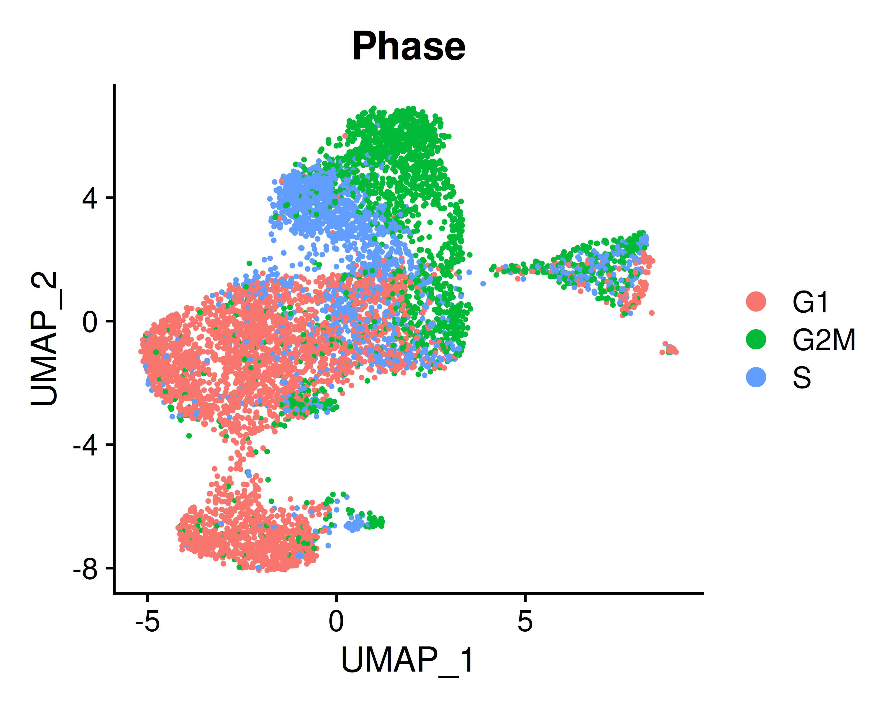
integrated_ec@meta.data[integrated_ec@meta.data$SCT_snn_res.0.2 %in% c("0"), "cell_type"] = "Ec1"
integrated_ec@meta.data[integrated_ec@meta.data$SCT_snn_res.0.2 %in% c("1"), "cell_type"] = "Ec_prol"
integrated_ec@meta.data[integrated_ec@meta.data$SCT_snn_res.0.2 %in% c("2"), "cell_type"] = "Ec_2"
integrated_ec@meta.data[integrated_ec@meta.data$SCT_snn_res.0.2 %in% c("3"), "cell_type"] = "Ec_3"
integrated_ec@meta.data[integrated_ec@meta.data$SCT_snn_res.0.2 %in% c("4"), "cell_type"] = "Fibroblasts"
integrated_ec@meta.data[integrated_ec@meta.data$SCT_snn_res.0.2 %in% c("5"), "cell_type"] = "Cardioyocytes"
integrated_ec$cell_type <- factor(integrated_ec$cell_type, levels = c("Ec1",
"Ec_prol",
"Ec_2",
"Ec_3",
"Fibroblasts",
"Cardioyocytes"
))
Idents(integrated_ec) <- integrated_ec$cell_typeheatmap_cols <- colorRampPalette(RColorBrewer::brewer.pal(9,"RdBu"))(256)
heatmap_cols <- rev(heatmap_cols[1:256])
integrated_ec <- ScaleData(integrated_ec)
Heatmap <- DoHeatmap(subset(integrated_ec, cells = sample(colnames(integrated_ec), 7164)), label = TRUE, draw.line = F, features = Markers_top10_integrated_ec$gene, assay = "RNA") +
scale_fill_gradientn(colours = heatmap_cols) +
theme(text = element_text(size = 12),
axis.text.y = element_text(size = 8)) +
theme(plot.margin = unit(c(0.2, 0, 0, 0), "inches")) +
guides(fill = guide_colorbar(barwidth = 1, barheight = 4)) + guides(color = "none")
Heatmap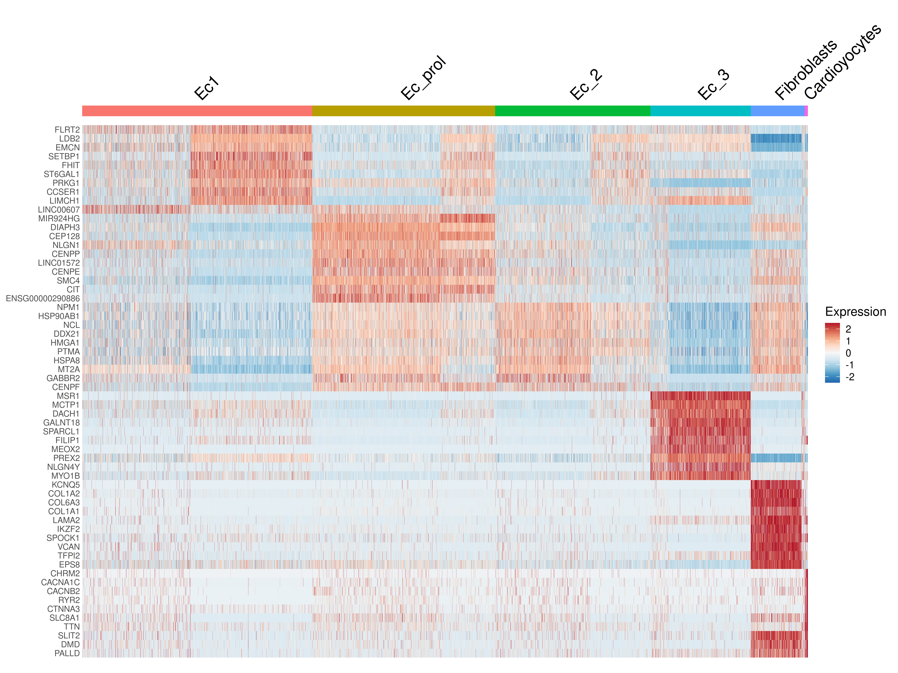
p <- DimPlot(integrated_ec, group.by = "cell_type", reduction = "umap", label = F) +
NoLegend() +
theme(axis.text=element_text(size=14, face = "bold"), axis.title = element_text(size = 18, face = "bold")) +
theme(plot.title = element_blank())
LabelClusters(p, id = "cell_type", fontface = "bold", size = 5.5, repel = T)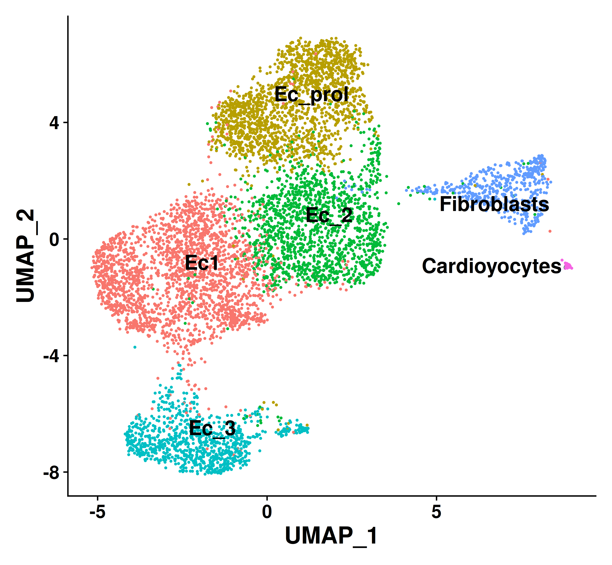
DotPlot(integrated_ec, assay = "SCT", features = rev(Markers_top3_integrated_ec$gene), dot.scale = 5, cluster.idents = FALSE) +
RotatedAxis() +
coord_flip() +
theme(axis.title = element_blank(), axis.text.x = element_text(size = 14), axis.text.y = element_text(size = 13), legend.text = element_text(size = 9), legend.title = element_text(size = 11), plot.margin = unit(c(0, 0, 0, 0.1),
"inches"))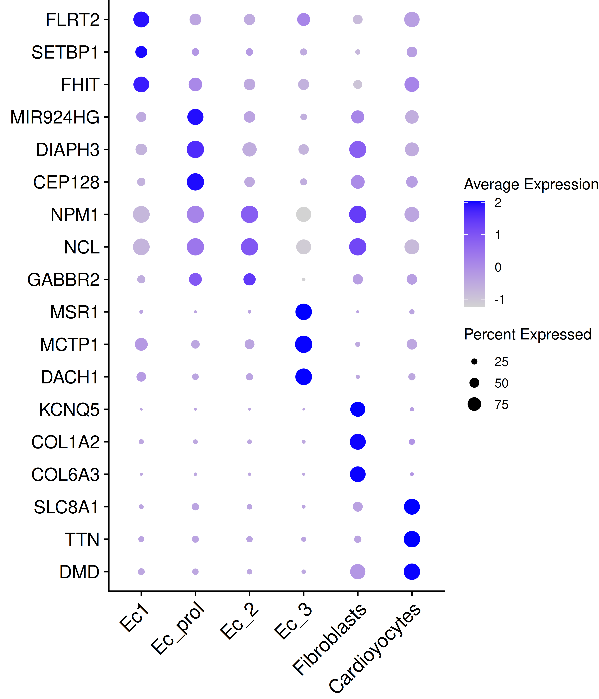
FeaturePlot_scCustom(integrated_ec, features = c("VWF", "PECAM1", "RYR2", "TTN", "COL1A1", "COL1A2", "DCN", "PDGFRA", "KDR", "CDH5", "ESAM", "CD34", "nCount_RNA", "nFeature_RNA", "percent.mt", "percent.rp"), num_columns = 4)
FeaturePlot_scCustom(integrated_ec, features = c("VWF", "PECAM1", "RYR2", "COL1A1", "KDR", "CDH5", "ESAM", "CD34", "nCount_RNA", "nFeature_RNA", "percent.mt", "percent.rp"), num_columns = 4, order = F)
color_palette_all <- c("#F8766D", "#00C1AB", "#24B700", "#E18A00", "#00ACFC", "#D575FE", "#BE9C00", "#00BE70",
"#8CAB00", "#00BBDA", "#FF65AC", "#8B93FF", "#EA8331")
color_palette <- c("#F8766D", "#24B700", "#00ACFC", "#E18A00", "#D575FE", "#8B93FF", "#BE9C00", "#00BE70", "#FF65AC")
props <- getTransformedProps(integrated_ec$cell_type, integrated_ec$Sample, transform="logit")
par(mar = c(23, 5, 1, 15), xpd = TRUE)
barplot(props$Proportions, legend = FALSE, ylab = "Proportions", col = color_palette,
cex.names = 1.6, las = 2, font.lab = 2, font.axis = 2, cex.axis = 1, cex.lab = 1.6)
legend("topright", inset = c(-0.5, 0.1), legend = rownames(props$Proportions), fill = color_palette, bty = "n", cex = 1.6)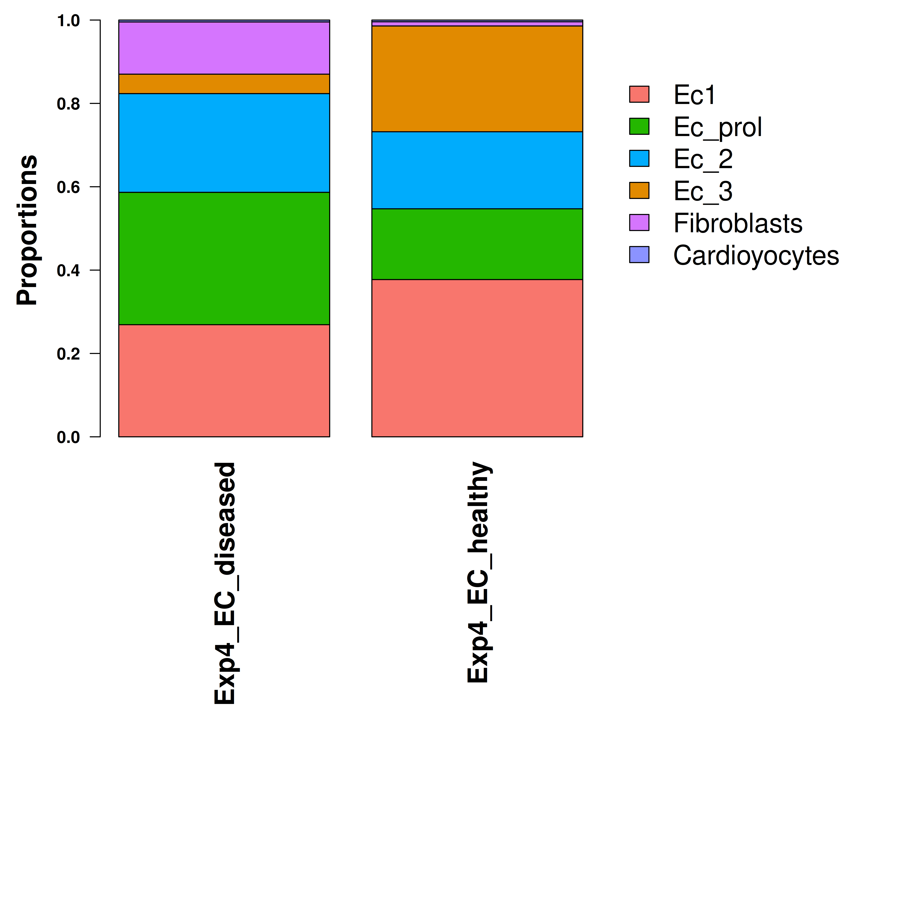
Exp4 2D and 3d endothelial cells
integrated_ec_mt <- merge(subset(integrated_ec, cell_type %in% c("Ec1", "Ec_prol", "Ec_2", "Ec_3")),
subset(integrated_exp4nc, cell_type %in% c("Ec", "Ec2"))
)
DefaultAssay(integrated_ec_mt) <- "SCT"
integrated_ec_mt <- SplitObject(integrated_ec_mt, split.by = "Sample")for (i in 1:length(integrated_ec_mt)) {
integrated_ec_mt[[i]] <- SCTransform(integrated_ec_mt[[i]],
vst.flavor = "v2",
vars.to.regress = c("percent.mt"),
return.only.var.genes = TRUE,
method = "glmGamPoi")
} | | | 0% | |================== | 25% | |=================================== | 50% | |==================================================== | 75% | |======================================================================| 100% | | | 0% | |= | 2% | |=== | 4% | |==== | 6% | |====== | 8% | |======= | 10% | |========= | 12% | |========== | 15% | |============ | 17% | |============= | 19% | |=============== | 21% | |================ | 23% | |================== | 25% | |=================== | 27% | |==================== | 29% | |====================== | 31% | |======================= | 33% | |========================= | 35% | |========================== | 38% | |============================ | 40% | |============================= | 42% | |=============================== | 44% | |================================ | 46% | |================================== | 48% | |=================================== | 50% | |==================================== | 52% | |====================================== | 54% | |======================================= | 56% | |========================================= | 58% | |========================================== | 60% | |============================================ | 62% | |============================================= | 65% | |=============================================== | 67% | |================================================ | 69% | |================================================== | 71% | |=================================================== | 73% | |==================================================== | 75% | |====================================================== | 77% | |======================================================= | 79% | |========================================================= | 81% | |========================================================== | 83% | |============================================================ | 85% | |============================================================= | 88% | |=============================================================== | 90% | |================================================================ | 92% | |================================================================== | 94% | |=================================================================== | 96% | |===================================================================== | 98% | |======================================================================| 100% | | | 0% | |= | 2% | |=== | 4% | |==== | 6% | |====== | 8% | |======= | 10% | |========= | 12% | |========== | 15% | |============ | 17% | |============= | 19% | |=============== | 21% | |================ | 23% | |================== | 25% | |=================== | 27% | |==================== | 29% | |====================== | 31% | |======================= | 33% | |========================= | 35% | |========================== | 38% | |============================ | 40% | |============================= | 42% | |=============================== | 44% | |================================ | 46% | |================================== | 48% | |=================================== | 50% | |==================================== | 52% | |====================================== | 54% | |======================================= | 56% | |========================================= | 58% | |========================================== | 60% | |============================================ | 62% | |============================================= | 65% | |=============================================== | 67% | |================================================ | 69% | |================================================== | 71% | |=================================================== | 73% | |==================================================== | 75% | |====================================================== | 77% | |======================================================= | 79% | |========================================================= | 81% | |========================================================== | 83% | |============================================================ | 85% | |============================================================= | 88% | |=============================================================== | 90% | |================================================================ | 92% | |================================================================== | 94% | |=================================================================== | 96% | |===================================================================== | 98% | |======================================================================| 100% | | | 0% | |================== | 25% | |=================================== | 50% | |==================================================== | 75% | |======================================================================| 100% | | | 0% | |= | 2% | |=== | 4% | |==== | 6% | |====== | 8% | |======= | 10% | |========= | 12% | |========== | 15% | |============ | 17% | |============= | 19% | |=============== | 21% | |================ | 23% | |================== | 25% | |=================== | 27% | |==================== | 29% | |====================== | 31% | |======================= | 33% | |========================= | 35% | |========================== | 38% | |============================ | 40% | |============================= | 42% | |=============================== | 44% | |================================ | 46% | |================================== | 48% | |=================================== | 50% | |==================================== | 52% | |====================================== | 54% | |======================================= | 56% | |========================================= | 58% | |========================================== | 60% | |============================================ | 62% | |============================================= | 65% | |=============================================== | 67% | |================================================ | 69% | |================================================== | 71% | |=================================================== | 73% | |==================================================== | 75% | |====================================================== | 77% | |======================================================= | 79% | |========================================================= | 81% | |========================================================== | 83% | |============================================================ | 85% | |============================================================= | 88% | |=============================================================== | 90% | |================================================================ | 92% | |================================================================== | 94% | |=================================================================== | 96% | |===================================================================== | 98% | |======================================================================| 100% | | | 0% | |= | 2% | |=== | 4% | |==== | 6% | |====== | 8% | |======= | 10% | |========= | 12% | |========== | 15% | |============ | 17% | |============= | 19% | |=============== | 21% | |================ | 23% | |================== | 25% | |=================== | 27% | |==================== | 29% | |====================== | 31% | |======================= | 33% | |========================= | 35% | |========================== | 38% | |============================ | 40% | |============================= | 42% | |=============================== | 44% | |================================ | 46% | |================================== | 48% | |=================================== | 50% | |==================================== | 52% | |====================================== | 54% | |======================================= | 56% | |========================================= | 58% | |========================================== | 60% | |============================================ | 62% | |============================================= | 65% | |=============================================== | 67% | |================================================ | 69% | |================================================== | 71% | |=================================================== | 73% | |==================================================== | 75% | |====================================================== | 77% | |======================================================= | 79% | |========================================================= | 81% | |========================================================== | 83% | |============================================================ | 85% | |============================================================= | 88% | |=============================================================== | 90% | |================================================================ | 92% | |================================================================== | 94% | |=================================================================== | 96% | |===================================================================== | 98% | |======================================================================| 100% | | | 0% | |================== | 25% | |=================================== | 50% | |==================================================== | 75% | |======================================================================| 100% | | | 0% | |== | 3% | |===== | 6% | |======= | 10% | |========= | 13% | |=========== | 16% | |============== | 19% | |================ | 23% | |================== | 26% | |==================== | 29% | |======================= | 32% | |========================= | 35% | |=========================== | 39% | |============================= | 42% | |================================ | 45% | |================================== | 48% | |==================================== | 52% | |====================================== | 55% | |========================================= | 58% | |=========================================== | 61% | |============================================= | 65% | |=============================================== | 68% | |================================================== | 71% | |==================================================== | 74% | |====================================================== | 77% | |======================================================== | 81% | |=========================================================== | 84% | |============================================================= | 87% | |=============================================================== | 90% | |================================================================= | 94% | |==================================================================== | 97% | |======================================================================| 100% | | | 0% | |== | 3% | |===== | 6% | |======= | 10% | |========= | 13% | |=========== | 16% | |============== | 19% | |================ | 23% | |================== | 26% | |==================== | 29% | |======================= | 32% | |========================= | 35% | |=========================== | 39% | |============================= | 42% | |================================ | 45% | |================================== | 48% | |==================================== | 52% | |====================================== | 55% | |========================================= | 58% | |=========================================== | 61% | |============================================= | 65% | |=============================================== | 68% | |================================================== | 71% | |==================================================== | 74% | |====================================================== | 77% | |======================================================== | 81% | |=========================================================== | 84% | |============================================================= | 87% | |=============================================================== | 90% | |================================================================= | 94% | |==================================================================== | 97% | |======================================================================| 100% | | | 0% | |================== | 25% | |=================================== | 50% | |==================================================== | 75% | |======================================================================| 100% | | | 0% | |== | 3% | |==== | 6% | |======= | 9% | |========= | 12% | |=========== | 16% | |============= | 19% | |=============== | 22% | |================== | 25% | |==================== | 28% | |====================== | 31% | |======================== | 34% | |========================== | 38% | |============================ | 41% | |=============================== | 44% | |================================= | 47% | |=================================== | 50% | |===================================== | 53% | |======================================= | 56% | |========================================== | 59% | |============================================ | 62% | |============================================== | 66% | |================================================ | 69% | |================================================== | 72% | |==================================================== | 75% | |======================================================= | 78% | |========================================================= | 81% | |=========================================================== | 84% | |============================================================= | 88% | |=============================================================== | 91% | |================================================================== | 94% | |==================================================================== | 97% | |======================================================================| 100% | | | 0% | |== | 3% | |==== | 6% | |======= | 9% | |========= | 12% | |=========== | 16% | |============= | 19% | |=============== | 22% | |================== | 25% | |==================== | 28% | |====================== | 31% | |======================== | 34% | |========================== | 38% | |============================ | 41% | |=============================== | 44% | |================================= | 47% | |=================================== | 50% | |===================================== | 53% | |======================================= | 56% | |========================================== | 59% | |============================================ | 62% | |============================================== | 66% | |================================================ | 69% | |================================================== | 72% | |==================================================== | 75% | |======================================================= | 78% | |========================================================= | 81% | |=========================================================== | 84% | |============================================================= | 88% | |=============================================================== | 91% | |================================================================== | 94% | |==================================================================== | 97% | |======================================================================| 100%features <- SelectIntegrationFeatures(object.list = integrated_ec_mt, nfeatures = 1000)
integrated_ec_mt <- merge(x = integrated_ec_mt[[1]], y = integrated_ec_mt[2:length(integrated_ec_mt)], merge.data=TRUE)
VariableFeatures(integrated_ec_mt) <- features
integrated_ec_mt <- RunPCA(integrated_ec_mt)ElbowPlot(integrated_ec_mt, ndims = 50)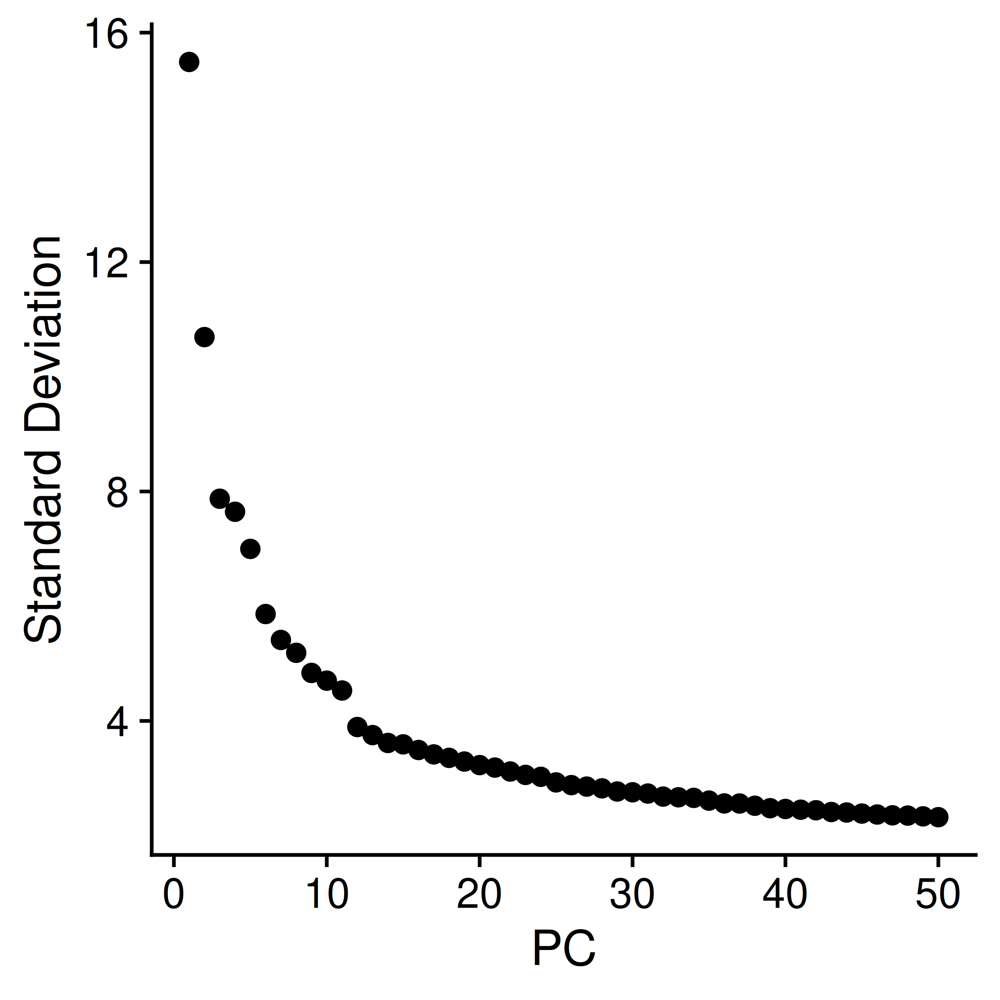
integrated_ec_mt <- RunHarmony(integrated_ec_mt,
assay.use="SCT",
group.by.vars = c("Sample"),
dims.use = 1:30,
plot_convergence=TRUE,
.options = harmony_options(
max.iter.cluster = 100,
)
)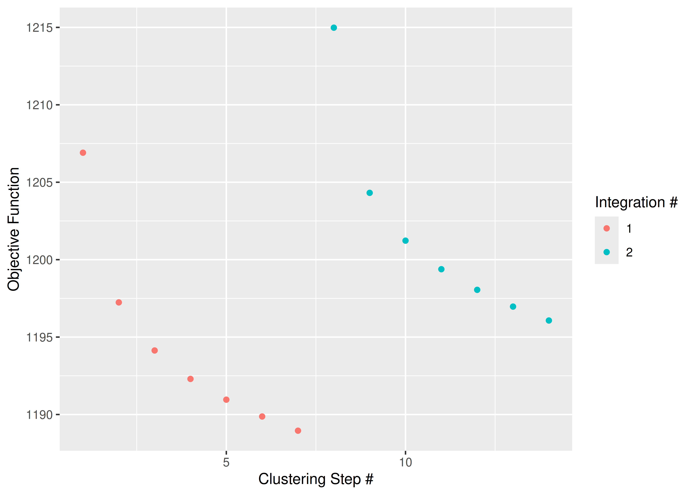
integrated_ec_mt <- RunUMAP(integrated_ec_mt, dims = 1:30, reduction = "harmony")
integrated_ec_mt <- FindNeighbors(integrated_ec_mt, dims = 1:30, reduction = "harmony")
integrated_ec_mt <- FindClusters(integrated_ec_mt, resolution = seq(0.1, 0.8, by=0.1))Modularity Optimizer version 1.3.0 by Ludo Waltman and Nees Jan van Eck
Number of nodes: 7463
Number of edges: 333854
Running Louvain algorithm...
Maximum modularity in 10 random starts: 0.9242
Number of communities: 3
Elapsed time: 1 seconds
Modularity Optimizer version 1.3.0 by Ludo Waltman and Nees Jan van Eck
Number of nodes: 7463
Number of edges: 333854
Running Louvain algorithm...
Maximum modularity in 10 random starts: 0.8871
Number of communities: 5
Elapsed time: 1 seconds
Modularity Optimizer version 1.3.0 by Ludo Waltman and Nees Jan van Eck
Number of nodes: 7463
Number of edges: 333854
Running Louvain algorithm...
Maximum modularity in 10 random starts: 0.8623
Number of communities: 7
Elapsed time: 1 seconds
Modularity Optimizer version 1.3.0 by Ludo Waltman and Nees Jan van Eck
Number of nodes: 7463
Number of edges: 333854
Running Louvain algorithm...
Maximum modularity in 10 random starts: 0.8430
Number of communities: 7
Elapsed time: 1 seconds
Modularity Optimizer version 1.3.0 by Ludo Waltman and Nees Jan van Eck
Number of nodes: 7463
Number of edges: 333854
Running Louvain algorithm...
Maximum modularity in 10 random starts: 0.8247
Number of communities: 8
Elapsed time: 1 seconds
Modularity Optimizer version 1.3.0 by Ludo Waltman and Nees Jan van Eck
Number of nodes: 7463
Number of edges: 333854
Running Louvain algorithm...
Maximum modularity in 10 random starts: 0.8077
Number of communities: 9
Elapsed time: 1 seconds
Modularity Optimizer version 1.3.0 by Ludo Waltman and Nees Jan van Eck
Number of nodes: 7463
Number of edges: 333854
Running Louvain algorithm...
Maximum modularity in 10 random starts: 0.7920
Number of communities: 11
Elapsed time: 1 seconds
Modularity Optimizer version 1.3.0 by Ludo Waltman and Nees Jan van Eck
Number of nodes: 7463
Number of edges: 333854
Running Louvain algorithm...
Maximum modularity in 10 random starts: 0.7800
Number of communities: 12
Elapsed time: 1 secondsclustree::clustree(integrated_ec_mt@meta.data[,grep("SCT_snn_res", colnames(integrated_ec_mt@meta.data))],
prefix = "SCT_snn_res.")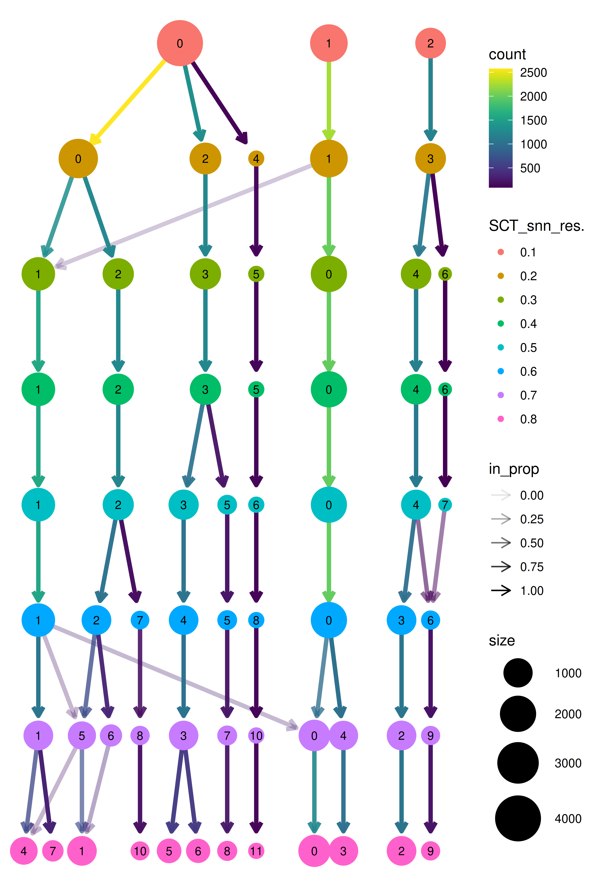
DimPlot(integrated_ec_mt, reduction = "umap", shuffle = T,
group.by = c("SCT_snn_res.0.2", "SCT_snn_res.0.3", "SCT_snn_res.0.4", "Sample", "Experiment", "Type", "Treatment", "Disease"), ncol = 4)
DefaultAssay(integrated_ec_mt) <- "RNA"
integrated_ec_mt <- NormalizeData(integrated_ec_mt)
Idents(integrated_ec_mt) <- "SCT_snn_res.0.2"
Markers_integrated_ec_mt <- FindAllMarkers(integrated_ec_mt, only.pos = TRUE, min.pct = 0.5, logfc.threshold = 0.5)
write.csv(Markers_integrated_ec_mt, here::here(output_dir_data, "Markers_all_integrated_ec_mt.csv"))
Markers_top10_integrated_ec_mt <- as.data.frame(Markers_integrated_ec_mt %>% group_by(cluster) %>% top_n(n = 10, wt = avg_log2FC))
write.csv(Markers_top10_integrated_ec_mt, here::here(output_dir_data, "Markers_all_top10_integrated_ec_mt.csv"))
Markers_top3_integrated_ec_mt <- as.data.frame(Markers_integrated_ec_mt %>% group_by(cluster) %>% top_n(n = 3, wt = avg_log2FC))
write.csv(Markers_top3_integrated_ec_mt, here::here(output_dir_data, "Markers_all_top3integrated_ec_mt.csv"))VlnPlot(integrated_ec_mt, features = c("nCount_RNA", "nFeature_RNA", "percent.mt", "percent.rp", "scDblFinder.score"), ncol = 2, pt.size = 0) + theme(axis.title.x = element_blank())
DefaultAssay(integrated_ec_mt) <- "RNA"
s.genes <- cc.genes$s.genes
g2m.genes <- cc.genes$g2m.genes
integrated_ec_mt <- CellCycleScoring(integrated_ec_mt, s.features = s.genes, g2m.features = g2m.genes)
DimPlot(integrated_ec_mt, reduction = "umap", shuffle = T,
group.by = "Phase")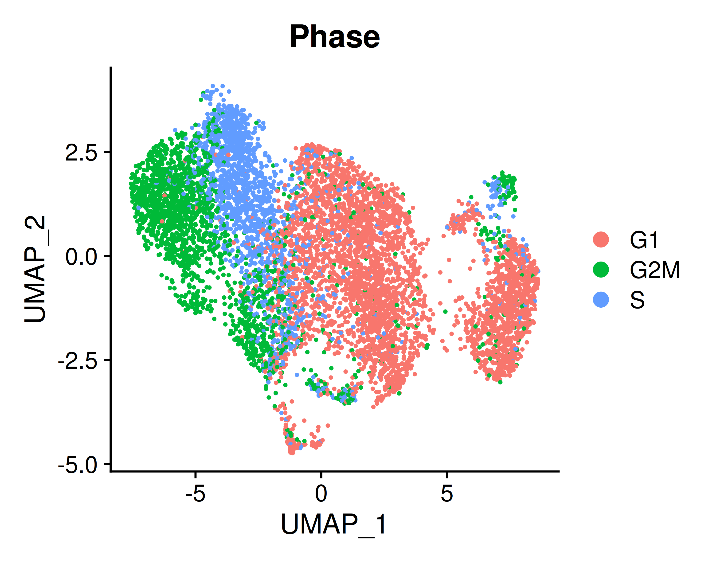
integrated_ec_mt@meta.data[integrated_ec_mt@meta.data$SCT_snn_res.0.2 %in% c("0"), "cell_type"] = "Ec1"
integrated_ec_mt@meta.data[integrated_ec_mt@meta.data$SCT_snn_res.0.2 %in% c("1"), "cell_type"] = "Ec_prol"
integrated_ec_mt@meta.data[integrated_ec_mt@meta.data$SCT_snn_res.0.2 %in% c("2"), "cell_type"] = "Ec_2"
integrated_ec_mt@meta.data[integrated_ec_mt@meta.data$SCT_snn_res.0.2 %in% c("3"), "cell_type"] = "Ec_3"
integrated_ec_mt@meta.data[integrated_ec_mt@meta.data$SCT_snn_res.0.2 %in% c("4"), "cell_type"] = "Doublets"
integrated_ec_mt$cell_type <- factor(integrated_ec_mt$cell_type, levels = c("Ec1",
"Ec_prol",
"Ec_2",
"Ec_3",
"Doublets"
))
Idents(integrated_ec_mt) <- integrated_ec_mt$cell_typeheatmap_cols <- colorRampPalette(RColorBrewer::brewer.pal(9,"RdBu"))(256)
heatmap_cols <- rev(heatmap_cols[1:256])
integrated_ec_mt <- ScaleData(integrated_ec_mt)
Heatmap <- DoHeatmap(subset(integrated_ec_mt, cells = sample(colnames(integrated_ec_mt), 7164)), label = TRUE, draw.line = F, features = Markers_top10_integrated_ec_mt$gene, assay = "RNA") +
scale_fill_gradientn(colours = heatmap_cols) +
theme(text = element_text(size = 12),
axis.text.y = element_text(size = 8)) +
theme(plot.margin = unit(c(0.2, 0, 0, 0), "inches")) +
guides(fill = guide_colorbar(barwidth = 1, barheight = 4)) + guides(color = "none")
Heatmap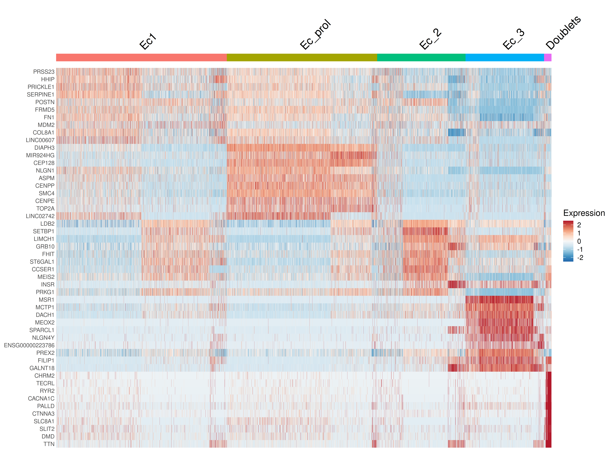
p <- DimPlot(integrated_ec_mt, group.by = "cell_type", reduction = "umap", label = F) +
NoLegend() +
theme(axis.text=element_text(size=14, face = "bold"), axis.title = element_text(size = 18, face = "bold")) +
theme(plot.title = element_blank())
LabelClusters(p, id = "cell_type", fontface = "bold", size = 5.5, repel = T)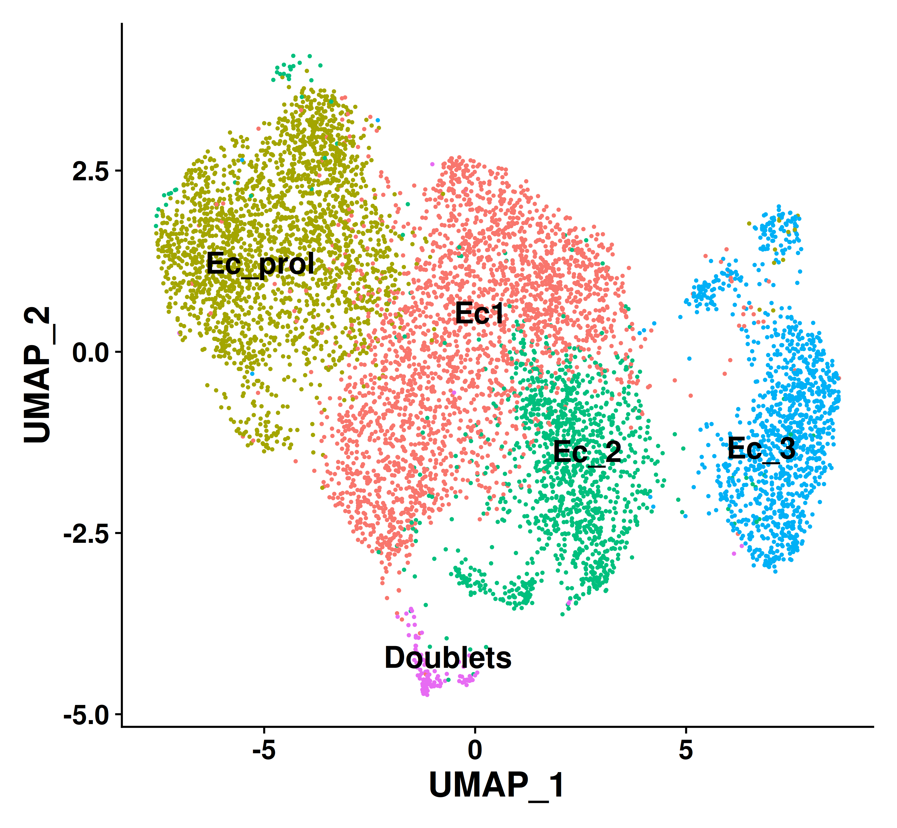
DotPlot(integrated_ec_mt, assay = "SCT", features = rev(Markers_top3_integrated_ec_mt$gene), dot.scale = 5, cluster.idents = FALSE) +
RotatedAxis() +
coord_flip() +
theme(axis.title = element_blank(), axis.text.x = element_text(size = 14), axis.text.y = element_text(size = 13), legend.text = element_text(size = 9), legend.title = element_text(size = 11), plot.margin = unit(c(0, 0, 0, 0.1),
"inches"))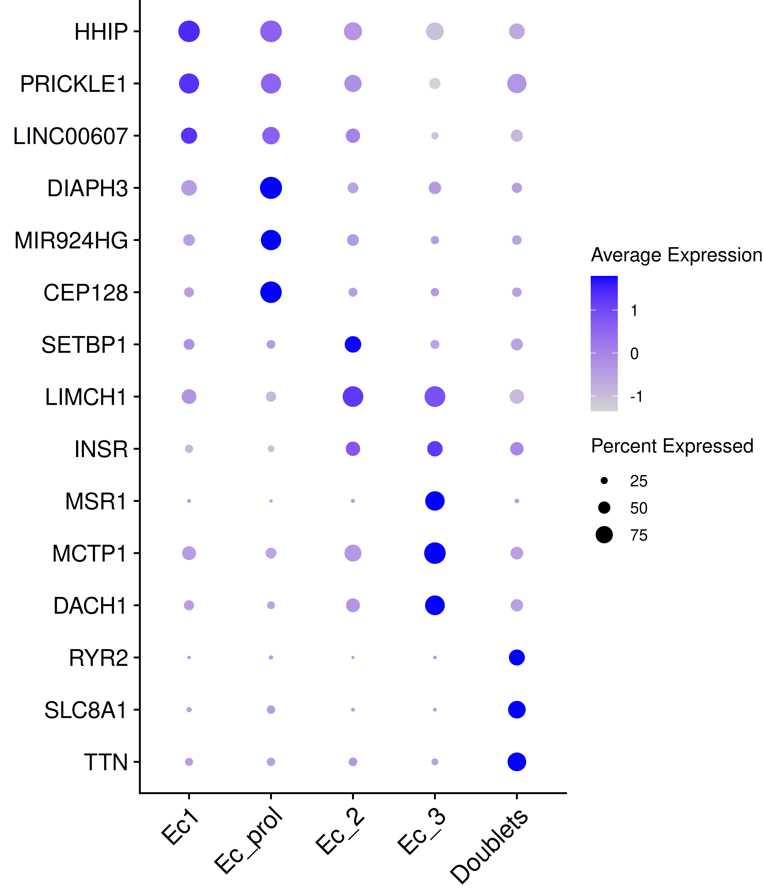
FeaturePlot_scCustom(integrated_ec_mt, features = c("VWF", "PECAM1", "RYR2", "TTN", "COL1A1", "COL1A2", "DCN", "PDGFRA", "KDR", "CDH5", "ESAM", "CD34", "nCount_RNA", "nFeature_RNA", "percent.mt", "percent.rp"), num_columns = 4)
FeaturePlot_scCustom(integrated_ec_mt, features = c("VWF", "PECAM1", "RYR2", "COL1A1", "KDR", "CDH5", "ESAM", "CD34", "nCount_RNA", "nFeature_RNA", "percent.mt", "percent.rp"), num_columns = 4, order = F)
color_palette_all <- c("#F8766D", "#00C1AB", "#24B700", "#E18A00", "#00ACFC", "#D575FE", "#BE9C00", "#00BE70",
"#8CAB00", "#00BBDA", "#FF65AC", "#8B93FF", "#EA8331")
color_palette <- c("#F8766D", "#24B700", "#00ACFC", "#E18A00", "#D575FE", "#8B93FF", "#BE9C00", "#00BE70", "#FF65AC")
props <- getTransformedProps(integrated_ec_mt$cell_type, integrated_ec_mt$Sample, transform="logit")
par(mar = c(23, 5, 1, 15), xpd = TRUE)
barplot(props$Proportions, legend = FALSE, ylab = "Proportions", col = color_palette,
cex.names = 1.6, las = 2, font.lab = 2, font.axis = 2, cex.axis = 1, cex.lab = 1.6)
legend("topright", inset = c(-0.5, 0.1), legend = rownames(props$Proportions), fill = color_palette, bty = "n", cex = 1.6)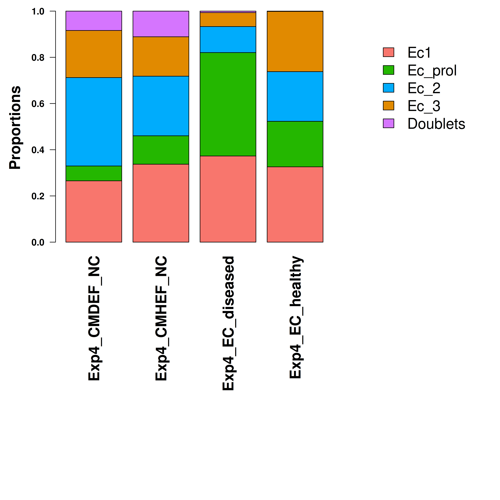
integrated_ec_mt_de <- subset(integrated_ec_mt, cell_type %in% c("Ec1", "Ec_prol", "Ec_2", "Ec_3"))
Idents(integrated_ec_mt_de) <- "Type"
Diff_exp_2d_3d <- FindMarkers(
integrated_ec_mt_de,
ident.1 = "Endothelial cells",
ident.2 = "Microtissues",
logfc.threshold = 0.25,
min.pct = 0.1
)
Diff_exp_2d_3d$p_val_adj[Diff_exp_2d_3d$p_val_adj == 0] <- 1e-300Diff_exp_2d_3d$gene <- rownames(Diff_exp_2d_3d)
Diff_exp_2d_3d <- Diff_exp_2d_3d %>%
mutate(
gene = rownames(.),
sig = case_when(
p_val_adj < 0.05 & avg_log2FC > 0.25 ~ "Up in 2D EC",
p_val_adj < 0.05 & avg_log2FC < -0.25 ~ "Up in Microtissue",
TRUE ~ "NS"
)
)
top_genes <- Diff_exp_2d_3d %>%
filter(p_val_adj < 0.01) %>%
arrange(p_val_adj) %>%
head(15)library(ggrepel)
ggplot(Diff_exp_2d_3d, aes(avg_log2FC, -log10(p_val_adj), color = sig)) +
geom_point(size = 1.5) +
geom_text_repel(
data = top_genes,
aes(label = gene),
size = 3
) +
scale_color_manual(values = c(
"Up in 2D EC" = "firebrick",
"Up in Microtissue" = "steelblue",
"NS" = "grey70"
)) +
theme_classic()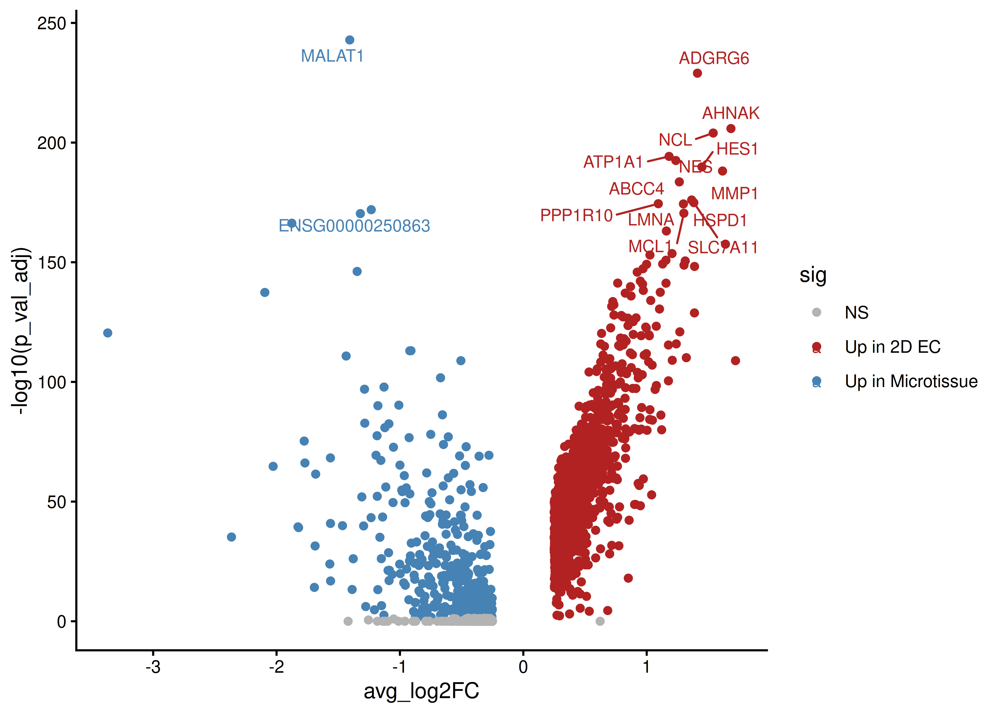
Exp4 pretreatment
integrated_pre <- subset(integrated_mt, Sample %in% c("Exp4_CMHEF_NC", "Exp4_CMHEF_EC_pretreated_TNF", "Exp4_CMHEF_EC_pretreated_TGF"))
integrated_pre <- subset(integrated_pre, cell_type %in% c("Ec"))
DefaultAssay(integrated_pre) <- "SCT"
integrated_pre <- SplitObject(integrated_pre, split.by = "Sample")for (i in 1:length(integrated_pre)) {
integrated_pre[[i]] <- SCTransform(integrated_pre[[i]],
vst.flavor = "v2",
vars.to.regress = c("percent.mt"),
return.only.var.genes = TRUE,
method = "glmGamPoi")
} | | | 0% | |================== | 25% | |=================================== | 50% | |==================================================== | 75% | |======================================================================| 100% | | | 0% | |== | 3% | |==== | 6% | |======= | 9% | |========= | 12% | |=========== | 16% | |============= | 19% | |=============== | 22% | |================== | 25% | |==================== | 28% | |====================== | 31% | |======================== | 34% | |========================== | 38% | |============================ | 41% | |=============================== | 44% | |================================= | 47% | |=================================== | 50% | |===================================== | 53% | |======================================= | 56% | |========================================== | 59% | |============================================ | 62% | |============================================== | 66% | |================================================ | 69% | |================================================== | 72% | |==================================================== | 75% | |======================================================= | 78% | |========================================================= | 81% | |=========================================================== | 84% | |============================================================= | 88% | |=============================================================== | 91% | |================================================================== | 94% | |==================================================================== | 97% | |======================================================================| 100% | | | 0% | |== | 3% | |==== | 6% | |======= | 9% | |========= | 12% | |=========== | 16% | |============= | 19% | |=============== | 22% | |================== | 25% | |==================== | 28% | |====================== | 31% | |======================== | 34% | |========================== | 38% | |============================ | 41% | |=============================== | 44% | |================================= | 47% | |=================================== | 50% | |===================================== | 53% | |======================================= | 56% | |========================================== | 59% | |============================================ | 62% | |============================================== | 66% | |================================================ | 69% | |================================================== | 72% | |==================================================== | 75% | |======================================================= | 78% | |========================================================= | 81% | |=========================================================== | 84% | |============================================================= | 88% | |=============================================================== | 91% | |================================================================== | 94% | |==================================================================== | 97% | |======================================================================| 100% | | | 0% | |================== | 25% | |=================================== | 50% | |==================================================== | 75% | |======================================================================| 100% | | | 0% | |== | 3% | |===== | 7% | |======= | 10% | |========== | 14% | |============ | 17% | |============== | 21% | |================= | 24% | |=================== | 28% | |====================== | 31% | |======================== | 34% | |=========================== | 38% | |============================= | 41% | |=============================== | 45% | |================================== | 48% | |==================================== | 52% | |======================================= | 55% | |========================================= | 59% | |=========================================== | 62% | |============================================== | 66% | |================================================ | 69% | |=================================================== | 72% | |===================================================== | 76% | |======================================================== | 79% | |========================================================== | 83% | |============================================================ | 86% | |=============================================================== | 90% | |================================================================= | 93% | |==================================================================== | 97% | |======================================================================| 100% | | | 0% | |== | 3% | |===== | 7% | |======= | 10% | |========== | 14% | |============ | 17% | |============== | 21% | |================= | 24% | |=================== | 28% | |====================== | 31% | |======================== | 34% | |=========================== | 38% | |============================= | 41% | |=============================== | 45% | |================================== | 48% | |==================================== | 52% | |======================================= | 55% | |========================================= | 59% | |=========================================== | 62% | |============================================== | 66% | |================================================ | 69% | |=================================================== | 72% | |===================================================== | 76% | |======================================================== | 79% | |========================================================== | 83% | |============================================================ | 86% | |=============================================================== | 90% | |================================================================= | 93% | |==================================================================== | 97% | |======================================================================| 100% | | | 0% | |================== | 25% | |=================================== | 50% | |==================================================== | 75% | |======================================================================| 100% | | | 0% | |== | 3% | |===== | 6% | |======= | 10% | |========= | 13% | |=========== | 16% | |============== | 19% | |================ | 23% | |================== | 26% | |==================== | 29% | |======================= | 32% | |========================= | 35% | |=========================== | 39% | |============================= | 42% | |================================ | 45% | |================================== | 48% | |==================================== | 52% | |====================================== | 55% | |========================================= | 58% | |=========================================== | 61% | |============================================= | 65% | |=============================================== | 68% | |================================================== | 71% | |==================================================== | 74% | |====================================================== | 77% | |======================================================== | 81% | |=========================================================== | 84% | |============================================================= | 87% | |=============================================================== | 90% | |================================================================= | 94% | |==================================================================== | 97% | |======================================================================| 100% | | | 0% | |== | 3% | |===== | 6% | |======= | 10% | |========= | 13% | |=========== | 16% | |============== | 19% | |================ | 23% | |================== | 26% | |==================== | 29% | |======================= | 32% | |========================= | 35% | |=========================== | 39% | |============================= | 42% | |================================ | 45% | |================================== | 48% | |==================================== | 52% | |====================================== | 55% | |========================================= | 58% | |=========================================== | 61% | |============================================= | 65% | |=============================================== | 68% | |================================================== | 71% | |==================================================== | 74% | |====================================================== | 77% | |======================================================== | 81% | |=========================================================== | 84% | |============================================================= | 87% | |=============================================================== | 90% | |================================================================= | 94% | |==================================================================== | 97% | |======================================================================| 100%features <- SelectIntegrationFeatures(object.list = integrated_pre, nfeatures = 1000)
integrated_pre <- merge(x = integrated_pre[[1]], y = integrated_pre[2:length(integrated_pre)], merge.data=TRUE)
VariableFeatures(integrated_pre) <- features
integrated_pre <- RunPCA(integrated_pre)ElbowPlot(integrated_pre, ndims = 50)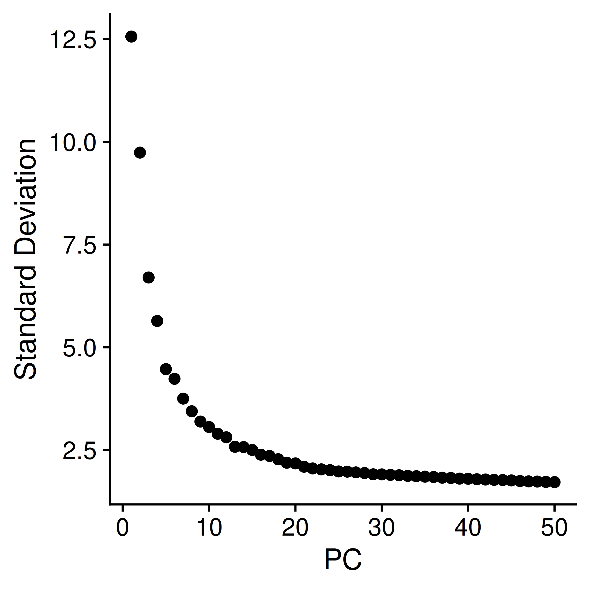
integrated_pre <- RunHarmony(integrated_pre,
assay.use="SCT",
group.by.vars = c("Sample"),
dims.use = 1:30,
plot_convergence=TRUE,
.options = harmony_options(
max.iter.cluster = 100,
)
)integrated_pre <- RunUMAP(integrated_pre, dims = 1:30, reduction = "harmony")
integrated_pre <- FindNeighbors(integrated_pre, dims = 1:30, reduction = "harmony")
integrated_pre <- FindClusters(integrated_pre, resolution = seq(0.1, 0.8, by=0.1))Modularity Optimizer version 1.3.0 by Ludo Waltman and Nees Jan van Eck
Number of nodes: 1031
Number of edges: 39491
Running Louvain algorithm...
Maximum modularity in 10 random starts: 0.9444
Number of communities: 4
Elapsed time: 0 seconds
Modularity Optimizer version 1.3.0 by Ludo Waltman and Nees Jan van Eck
Number of nodes: 1031
Number of edges: 39491
Running Louvain algorithm...
Maximum modularity in 10 random starts: 0.9167
Number of communities: 6
Elapsed time: 0 seconds
Modularity Optimizer version 1.3.0 by Ludo Waltman and Nees Jan van Eck
Number of nodes: 1031
Number of edges: 39491
Running Louvain algorithm...
Maximum modularity in 10 random starts: 0.8938
Number of communities: 6
Elapsed time: 0 seconds
Modularity Optimizer version 1.3.0 by Ludo Waltman and Nees Jan van Eck
Number of nodes: 1031
Number of edges: 39491
Running Louvain algorithm...
Maximum modularity in 10 random starts: 0.8710
Number of communities: 6
Elapsed time: 0 seconds
Modularity Optimizer version 1.3.0 by Ludo Waltman and Nees Jan van Eck
Number of nodes: 1031
Number of edges: 39491
Running Louvain algorithm...
Maximum modularity in 10 random starts: 0.8487
Number of communities: 7
Elapsed time: 0 seconds
Modularity Optimizer version 1.3.0 by Ludo Waltman and Nees Jan van Eck
Number of nodes: 1031
Number of edges: 39491
Running Louvain algorithm...
Maximum modularity in 10 random starts: 0.8270
Number of communities: 7
Elapsed time: 0 seconds
Modularity Optimizer version 1.3.0 by Ludo Waltman and Nees Jan van Eck
Number of nodes: 1031
Number of edges: 39491
Running Louvain algorithm...
Maximum modularity in 10 random starts: 0.8054
Number of communities: 7
Elapsed time: 0 seconds
Modularity Optimizer version 1.3.0 by Ludo Waltman and Nees Jan van Eck
Number of nodes: 1031
Number of edges: 39491
Running Louvain algorithm...
Maximum modularity in 10 random starts: 0.7839
Number of communities: 7
Elapsed time: 0 secondsclustree::clustree(integrated_pre@meta.data[,grep("SCT_snn_res", colnames(integrated_pre@meta.data))],
prefix = "SCT_snn_res.")DimPlot(integrated_pre, reduction = "umap", shuffle = T,
group.by = c("SCT_snn_res.0.2", "SCT_snn_res.0.3", "SCT_snn_res.0.4", "Sample", "Experiment", "Type", "Treatment", "Disease"), ncol = 4)
DefaultAssay(integrated_pre) <- "RNA"
integrated_pre <- NormalizeData(integrated_pre)
Idents(integrated_pre) <- "SCT_snn_res.0.2"
Markers_integrated_pre <- FindAllMarkers(integrated_pre, only.pos = TRUE, min.pct = 0.5, logfc.threshold = 0.5)
write.csv(Markers_integrated_pre, here::here(output_dir_data, "Markers_all_integrated_pre.csv"))
Markers_top10_integrated_pre <- as.data.frame(Markers_integrated_pre %>% group_by(cluster) %>% top_n(n = 10, wt = avg_log2FC))
write.csv(Markers_top10_integrated_pre, here::here(output_dir_data, "Markers_all_top10_integrated_pre.csv"))
Markers_top3_integrated_pre <- as.data.frame(Markers_integrated_pre %>% group_by(cluster) %>% top_n(n = 3, wt = avg_log2FC))
write.csv(Markers_top3_integrated_pre, here::here(output_dir_data, "Markers_all_top3integrated_pre.csv"))VlnPlot(integrated_pre, features = c("nCount_RNA", "nFeature_RNA", "percent.mt", "percent.rp", "scDblFinder.score"), ncol = 2, pt.size = 0) + theme(axis.title.x = element_blank())
DefaultAssay(integrated_pre) <- "RNA"
s.genes <- cc.genes$s.genes
g2m.genes <- cc.genes$g2m.genes
integrated_pre <- CellCycleScoring(integrated_pre, s.features = s.genes, g2m.features = g2m.genes)
DimPlot(integrated_pre, reduction = "umap", shuffle = T,
group.by = "Phase")integrated_pre@meta.data[integrated_pre@meta.data$SCT_snn_res.0.2 %in% c("0"), "cell_type"] = "Ec1"
integrated_pre@meta.data[integrated_pre@meta.data$SCT_snn_res.0.2 %in% c("1"), "cell_type"] = "Ec2"
integrated_pre@meta.data[integrated_pre@meta.data$SCT_snn_res.0.2 %in% c("2"), "cell_type"] = "Contamination_fb"
integrated_pre@meta.data[integrated_pre@meta.data$SCT_snn_res.0.2 %in% c("3"), "cell_type"] = "Contamination_cm"
integrated_pre@meta.data[integrated_pre@meta.data$SCT_snn_res.0.2 %in% c("4"), "cell_type"] = "Ec3"
integrated_pre@meta.data[integrated_pre@meta.data$SCT_snn_res.0.2 %in% c("5"), "cell_type"] = "Ec4"
integrated_pre$cell_type <- factor(integrated_pre$cell_type, levels = c("Ec1",
"Ec2",
"Contamination_fb",
"Contamination_cm",
"Ec3",
"Ec4"
))
Idents(integrated_pre) <- integrated_pre$cell_typeheatmap_cols <- colorRampPalette(RColorBrewer::brewer.pal(9,"RdBu"))(256)
heatmap_cols <- rev(heatmap_cols[1:256])
integrated_pre <- ScaleData(integrated_pre)
Heatmap <- DoHeatmap(integrated_pre, label = TRUE, draw.line = F, features = Markers_top10_integrated_pre$gene, assay = "RNA") +
scale_fill_gradientn(colours = heatmap_cols) +
theme(text = element_text(size = 12),
axis.text.y = element_text(size = 8)) +
theme(plot.margin = unit(c(0.2, 0, 0, 0), "inches")) +
guides(fill = guide_colorbar(barwidth = 1, barheight = 4)) + guides(color = "none")
Heatmapp <- DimPlot(integrated_pre, group.by = "cell_type", reduction = "umap", label = F) +
NoLegend() +
theme(axis.text=element_text(size=14, face = "bold"), axis.title = element_text(size = 18, face = "bold")) +
theme(plot.title = element_blank())
LabelClusters(p, id = "cell_type", fontface = "bold", size = 5.5, repel = T)DotPlot(integrated_pre, assay = "SCT", features = rev(Markers_top3_integrated_pre$gene), dot.scale = 5, cluster.idents = FALSE) +
RotatedAxis() +
coord_flip() +
theme(axis.title = element_blank(), axis.text.x = element_text(size = 14), axis.text.y = element_text(size = 13), legend.text = element_text(size = 9), legend.title = element_text(size = 11), plot.margin = unit(c(0, 0, 0, 0.1),
"inches"))FeaturePlot_scCustom(integrated_pre, features = c("VWF", "PECAM1", "RYR2", "TTN", "COL1A1", "COL1A2", "DCN", "PDGFRA", "KDR", "CDH5", "ESAM", "CD34", "nCount_RNA", "nFeature_RNA", "percent.mt", "percent.rp"), num_columns = 4)
FeaturePlot_scCustom(integrated_pre, features = c("VWF", "PECAM1", "RYR2", "TTN", "COL1A1", "COL1A2", "DCN", "PDGFRA", "KDR", "CDH5", "ESAM", "CD34", "nCount_RNA", "nFeature_RNA", "percent.mt", "percent.rp"), num_columns = 4, order=F)
color_palette_all <- c("#F8766D", "#00C1AB", "#24B700", "#E18A00", "#00ACFC", "#D575FE", "#BE9C00", "#00BE70",
"#8CAB00", "#00BBDA", "#FF65AC", "#8B93FF", "#EA8331")
color_palette <- c("#F8766D", "#24B700", "#00ACFC", "#E18A00", "#D575FE", "#8B93FF", "#BE9C00", "#00BE70", "#FF65AC")
props <- getTransformedProps(integrated_pre$cell_type, integrated_pre$Sample, transform="logit")
par(mar = c(23, 5, 1, 15), xpd = TRUE)
barplot(props$Proportions, legend = FALSE, ylab = "Proportions", col = color_palette,
cex.names = 1.6, las = 2, font.lab = 2, font.axis = 2, cex.axis = 1, cex.lab = 1.6)
legend("topright", inset = c(-0.6, 0.2), legend = rownames(props$Proportions), fill = color_palette, bty = "n", cex = 1.6)integrated_pre_de <- subset(integrated_pre, cell_type %in% c("Ec1", "Ec_2", "Ec_3", "Ec_4"))
Idents(integrated_pre_de) <- "Treatment"
Diff_exp_2d_3d <- FindMarkers(
integrated_pre_de,
ident.1 = "TNF_pretreatment",
ident.2 = "Untreated",
logfc.threshold = 0.25,
min.pct = 0.1
)
Diff_exp_2d_3d$p_val_adj[Diff_exp_2d_3d$p_val_adj == 0] <- 1e-300Diff_exp_2d_3d$gene <- rownames(Diff_exp_2d_3d)
Diff_exp_2d_3d <- Diff_exp_2d_3d %>%
mutate(
gene = rownames(.),
sig = case_when(
p_val_adj < 0.05 & avg_log2FC > 0.25 ~ "Up in TNF_pretreatment",
p_val_adj < 0.05 & avg_log2FC < -0.25 ~ "Up in Untreated",
TRUE ~ "NS"
)
)
top_genes <- Diff_exp_2d_3d %>%
filter(p_val_adj < 0.01) %>%
arrange(p_val_adj) %>%
head(15)library(ggrepel)
ggplot(Diff_exp_2d_3d, aes(avg_log2FC, -log10(p_val_adj), color = sig)) +
geom_point(size = 1.5) +
geom_text_repel(
data = top_genes,
aes(label = gene),
size = 3
) +
scale_color_manual(values = c(
"Up in TNF_pretreatment" = "firebrick",
"Up in Untreated" = "steelblue",
"NS" = "grey70"
)) +
theme_classic()Diff_exp_2d_3d <- FindMarkers(
integrated_pre_de,
ident.1 = "TGFb_pretreatment",
ident.2 = "Untreated",
logfc.threshold = 0.25,
min.pct = 0.1
)
Diff_exp_2d_3d$p_val_adj[Diff_exp_2d_3d$p_val_adj == 0] <- 1e-300Diff_exp_2d_3d$gene <- rownames(Diff_exp_2d_3d)
Diff_exp_2d_3d <- Diff_exp_2d_3d %>%
mutate(
gene = rownames(.),
sig = case_when(
p_val_adj < 0.05 & avg_log2FC > 0.25 ~ "Up in TGFb_pretreatment",
p_val_adj < 0.05 & avg_log2FC < -0.25 ~ "Up in Untreated",
TRUE ~ "NS"
)
)
top_genes <- Diff_exp_2d_3d %>%
filter(p_val_adj < 0.01) %>%
arrange(p_val_adj) %>%
head(15)library(ggrepel)
ggplot(Diff_exp_2d_3d, aes(avg_log2FC, -log10(p_val_adj), color = sig)) +
geom_point(size = 1.5) +
geom_text_repel(
data = top_genes,
aes(label = gene),
size = 3
) +
scale_color_manual(values = c(
"Up in TGFb_pretreatment" = "firebrick",
"Up in Untreated" = "steelblue",
"NS" = "grey70"
)) +
theme_classic()qs_save(integrated_mt,
file = here::here(output_dir_data, "integrated_mt.qs2"),
nthreads = 32
)
qs_save(integrated_ec,
file = here::here(output_dir_data, "integrated_ec.qs2"),
nthreads = 32
)
sessionInfo()R version 4.5.2 (2025-10-31)
Platform: x86_64-pc-linux-gnu
Running under: Ubuntu 24.04.3 LTS
Matrix products: default
BLAS: /usr/lib/x86_64-linux-gnu/openblas-pthread/libblas.so.3
LAPACK: /usr/lib/x86_64-linux-gnu/openblas-pthread/libopenblasp-r0.3.26.so; LAPACK version 3.12.0
locale:
[1] LC_CTYPE=en_US.UTF-8 LC_NUMERIC=C
[3] LC_TIME=en_US.UTF-8 LC_COLLATE=en_US.UTF-8
[5] LC_MONETARY=en_US.UTF-8 LC_MESSAGES=en_US.UTF-8
[7] LC_PAPER=en_US.UTF-8 LC_NAME=C
[9] LC_ADDRESS=C LC_TELEPHONE=C
[11] LC_MEASUREMENT=en_US.UTF-8 LC_IDENTIFICATION=C
time zone: Etc/UTC
tzcode source: system (glibc)
attached base packages:
[1] stats4 stats graphics grDevices datasets utils methods
[8] base
other attached packages:
[1] ggrepel_0.9.6 future_1.68.0
[3] qs2_0.1.7 edgeR_4.8.0
[5] dorothea_1.22.0 OmnipathR_3.18.2
[7] decoupleR_2.16.0 reactable_0.4.5
[9] limma_3.66.0 speckle_1.10.0
[11] ReactomePA_1.54.0 AnnotationHub_4.0.0
[13] BiocFileCache_3.0.0 dbplyr_2.5.1
[15] gprofiler2_0.2.4 harmony_1.2.4
[17] Rcpp_1.1.0 clustree_0.5.1
[19] ggraph_2.2.2 statmod_1.5.1
[21] scater_1.38.0 scuttle_1.20.0
[23] Matrix.utils_0.9.7 gridExtra_2.3
[25] png_0.1-8 pheatmap_1.0.13
[27] reshape2_1.4.5 lubridate_1.9.4
[29] forcats_1.0.1 stringr_1.6.0
[31] purrr_1.2.0 tidyr_1.3.1
[33] tidyverse_2.0.0 magrittr_2.0.4
[35] scCustomize_3.2.2 scDblFinder_1.24.0
[37] Matrix_1.6-5 DropletUtils_1.30.0
[39] SingleCellExperiment_1.32.0 SummarizedExperiment_1.40.0
[41] GenomicRanges_1.62.0 Seqinfo_1.0.0
[43] MatrixGenerics_1.22.0 matrixStats_1.5.0
[45] SeuratObject_5.0.2 Seurat_4.4.0
[47] enrichplot_1.30.4 org.Hs.eg.db_3.22.0
[49] AnnotationDbi_1.72.0 IRanges_2.44.0
[51] S4Vectors_0.48.0 Biobase_2.70.0
[53] BiocGenerics_0.56.0 generics_0.1.4
[55] clusterProfiler_4.18.2 scales_1.4.0
[57] patchwork_1.3.2 knitr_1.50
[59] readxl_1.4.5 readr_2.1.6
[61] tibble_3.3.0 ggplot2_4.0.1
[63] dplyr_1.1.4 here_1.0.2
[65] workflowr_1.7.2
loaded via a namespace (and not attached):
[1] igraph_2.2.1 graph_1.88.0
[3] ica_1.0-3 plotly_4.11.0
[5] rematch2_2.1.2 tidyselect_1.2.1
[7] rvest_1.0.5 bit_4.6.0
[9] lattice_0.22-7 rjson_0.2.23
[11] blob_1.2.4 S4Arrays_1.10.1
[13] parallel_4.5.2 cli_3.6.5
[15] ggplotify_0.1.3 goftest_1.2-3
[17] BiocIO_1.20.0 glmGamPoi_1.22.0
[19] bluster_1.20.0 grr_0.9.5
[21] BiocNeighbors_2.4.0 uwot_0.2.4
[23] curl_7.0.0 mime_0.13
[25] evaluate_1.0.5 tidytree_0.4.6
[27] leiden_0.4.3.1 stringi_1.8.7
[29] backports_1.5.0 XML_3.99-0.20
[31] httpuv_1.6.16 paletteer_1.6.0
[33] rappdirs_0.3.3 splines_4.5.2
[35] bcellViper_1.46.0 logger_0.4.1
[37] sctransform_0.4.2 ggbeeswarm_0.7.3
[39] sessioninfo_1.2.3 DBI_1.2.3
[41] HDF5Array_1.38.0 jquerylib_0.1.4
[43] reactome.db_1.94.0 withr_3.0.2
[45] git2r_0.36.2 systemfonts_1.3.1
[47] rprojroot_2.1.1 xgboost_3.1.2.1
[49] lmtest_0.9-40 ggnewscale_0.5.2
[51] tidygraph_1.3.1 rtracklayer_1.70.0
[53] BiocManager_1.30.27 htmlwidgets_1.6.4
[55] fs_1.6.6 labeling_0.4.3
[57] SparseArray_1.10.4 cellranger_1.1.0
[59] h5mread_1.2.1 reticulate_1.44.1
[61] zoo_1.8-14 XVector_0.50.0
[63] UCSC.utils_1.6.0 RhpcBLASctl_0.23-42
[65] timechange_0.3.0 grid_4.5.2
[67] data.table_1.17.8 ggtree_4.0.1
[69] rhdf5_2.54.0 R.oo_1.27.1
[71] ggiraph_0.9.2 RSpectra_0.16-2
[73] irlba_2.3.5.1 ggrastr_1.0.2
[75] gridGraphics_0.5-1 lazyeval_0.2.2
[77] yaml_2.3.11 survival_3.8-3
[79] scattermore_1.2 BiocVersion_3.22.0
[81] crayon_1.5.3 RcppAnnoy_0.0.22
[83] RColorBrewer_1.1-3 progressr_0.18.0
[85] tweenr_2.0.3 later_1.4.4
[87] ggridges_0.5.7 codetools_0.2-20
[89] GlobalOptions_0.1.3 KEGGREST_1.50.0
[91] Rtsne_0.17 shape_1.4.6.1
[93] gdtools_0.4.4 Rsamtools_2.26.0
[95] filelock_1.0.3 pkgconfig_2.0.3
[97] xml2_1.5.1 spatstat.univar_3.1-5
[99] GenomicAlignments_1.46.0 getPass_0.2-4
[101] aplot_0.2.9 spatstat.sparse_3.1-0
[103] ape_5.8-1 viridisLite_0.4.2
[105] xtable_1.8-4 plyr_1.8.9
[107] httr_1.4.7 tools_4.5.2
[109] globals_0.18.0 beeswarm_0.4.0
[111] checkmate_2.3.3 nlme_3.1-168
[113] hdf5r_1.3.12 digest_0.6.39
[115] farver_2.1.2 tzdb_0.5.0
[117] yulab.utils_0.2.2 viridis_0.6.5
[119] glue_1.8.0 cachem_1.1.0
[121] polyclip_1.10-7 Biostrings_2.78.0
[123] parallelly_1.45.1 ScaledMatrix_1.18.0
[125] fontBitstreamVera_0.1.1 pbapply_1.7-4
[127] httr2_1.2.1 tcltk_4.5.2
[129] spam_2.11-1 gson_0.1.0
[131] dqrng_0.4.1 utf8_1.2.6
[133] graphlayouts_1.2.2 shiny_1.12.0
[135] tidydr_0.0.6 R.utils_2.13.0
[137] rhdf5filters_1.22.0 RCurl_1.98-1.17
[139] memoise_2.0.1 rmarkdown_2.30
[141] R.methodsS3_1.8.2 RANN_2.6.2
[143] fontLiberation_0.1.0 renv_1.1.5
[145] stringfish_0.18.0 spatstat.data_3.1-9
[147] rstudioapi_0.17.1 cluster_2.1.8.1
[149] whisker_0.4.1 janitor_2.2.1
[151] spatstat.utils_3.2-0 hms_1.1.4
[153] fitdistrplus_1.2-4 cowplot_1.2.0
[155] colorspace_2.1-2 rlang_1.1.6
[157] GenomeInfoDb_1.46.1 DelayedMatrixStats_1.32.0
[159] sparseMatrixStats_1.22.0 dotCall64_1.2
[161] ggforce_0.5.0 circlize_0.4.16
[163] ggtangle_0.0.9 xfun_0.54
[165] abind_1.4-8 GOSemSim_2.36.0
[167] treeio_1.34.0 Rhdf5lib_1.32.0
[169] bitops_1.0-9 ps_1.9.1
[171] promises_1.5.0 scatterpie_0.2.6
[173] RSQLite_2.4.5 qvalue_2.42.0
[175] fgsea_1.36.0 DelayedArray_0.36.0
[177] GO.db_3.22.0 compiler_4.5.2
[179] prettyunits_1.2.0 beachmat_2.26.0
[181] graphite_1.56.0 listenv_0.10.0
[183] fontquiver_0.2.1 BiocSingular_1.26.1
[185] tensor_1.5.1 MASS_7.3-65
[187] progress_1.2.3 BiocParallel_1.44.0
[189] spatstat.random_3.4-3 R6_2.6.1
[191] fastmap_1.2.0 fastmatch_1.1-6
[193] vipor_0.4.7 ROCR_1.0-11
[195] rsvd_1.0.5 gtable_0.3.6
[197] KernSmooth_2.23-26 miniUI_0.1.2
[199] deldir_2.0-4 htmltools_0.5.9
[201] RcppParallel_5.1.11-2 bit64_4.6.0-1
[203] spatstat.explore_3.6-0 lifecycle_1.0.4
[205] ggprism_1.0.7 S7_0.2.1
[207] zip_2.3.3 processx_3.8.6
[209] callr_3.7.6 restfulr_0.0.16
[211] sass_0.4.10 vctrs_0.6.5
[213] spatstat.geom_3.6-1 snakecase_0.11.1
[215] DOSE_4.4.0 scran_1.38.0
[217] ggfun_0.2.0 sp_2.2-0
[219] future.apply_1.20.0 bslib_0.9.0
[221] pillar_1.11.1 metapod_1.18.0
[223] locfit_1.5-9.12 otel_0.2.0
[225] jsonlite_2.0.0 cigarillo_1.0.0